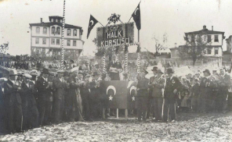

Giriş ve Kısa Özet
Giriş ve Kısa Özet
CHP, Büyük Önder Mustafa Kemal Atatürk öncülüğünde 9 Eylül 1923’te önce “Halk Fırkası” adıyla kurulmuştur. 1924 yılında “Cumhuriyet Halk Fırkası”, 1935 yılında ise “Cumhuriyet Halk Partisi” adını almıştır. 1927 yılında “Cumhuriyetçilik”, “Halkçılık”, “Milliyetçilik” ve “Laiklik” CHP’nin dört temel ilkesi olarak benimsenmiştir. 1935 yılında “Devletçilik” ve “Devrimcilik” ilkeleri de eklenerek Partinin ilkeleri altıya çıkarılmıştır. Partinin amblemi olan 6 ok bu ilkeleri simgelemektedir. CHP, kurucusu ve ilk Genel Başkanı Atatürk’ün önderliğinde ulusal bağımsızlığı kazanan, Cumhuriyeti kuran, saltanatı kaldıran, hilafete son veren ve Ulusal Birliği sağlayan Partidir. Hukuk ve eğitim gibi toplumsal alanlarda gerçekleştirdiği reformlarla çağdaş Türkiye Cumhuriyeti’ni biçimlendirmiştir. Ulusal sanayinin ve ekonominin gelişmesine öncülük etmiştir. İkinci Dünya Savaşı sonrasında tek parti konumunun tüm olanaklarına karşın, çok partili rejime geçişi sağlayarak Türkiye’nin demokratikleşme sürecinde de öncü misyonunu sürdürmüştür. 1950’li yıllarda üstlendiği muhalefet göreviyle demokratik bir rejimde muhalefetin kurumsallaşmasına da öncülük etmiştir. Bu kapsamda parlamenter demokratik rejimin kurumsallaşmasına dönük değişimleri gerçekleştirme ve temel hak ve özgürlükleri geliştirme mücadelesi vermiştir. 1960’lı yıllarda Türkiye’nin yaşadığı modernleşme sürecinin yansımaları olarak ortaya çıkan göç, kentleşme, sanayileşme gibi dinamikler çerçevesinde toplumsal sınıfların olgunlaşmasıyla birlikte CHP sola açılarak kendisini siyaset yelpazesinde “ortanın solu”nda konumlandırmıştır. 1970’li yıllarda ideolojisini “demokratik sol” kavramıyla tanımlayan CHP, önerdiği sosyal reformlarla “düzen değişikliği”ni hedeflemiştir. Bu süreçte CHP, “devlet partisinden” “halkın partisine”, düzen partisinden” “değişimin partisine” dönüşmüştür. Türkiye Cumhuriyeti’ni kurma ve ülkemizin en köklü partisi olma gibi sahip olduğu ayrıcalıklı tarihsel miraslarıyla, geleneğini ve temellerini en iyi şekilde temsil eden ilkelerin yanı sıra sosyal demokrasinin evrensel ilkelerini de benimseyen CHP bu çerçevede Uluslararası ölçekte faaliyetlerini sürdüren Sosyalist Enternasyonal ve Avrupa Sosyalistler Partisine de katılım sağlamıştır. Çağdaş sosyal demokrasinin evrensel değerleri olan “özgürlük, eşitlik, dayanışma, emeğin üstünlüğü, gelişmenin bütünlüğü ve etkinliği ile demokratikleşme” kavramları içinde bulunduğumuz dönemde CHP’nin Türkiye’de kurumsallaştırmaya çalıştığı ve Programlarında önemle vurguladığı başlıca ilkeler arasında yer almaktadır.
Cumhuriyet Halk Fırkası’nın Kuruluşu
Kurucumuz Gazi Mustafa Kemal Atatürk, CHP’nin 4. Kurultayı’nda, Ankara, 9 Mayıs 1935
Mustafa Kemal Atatürk CHP’nin kurulmasına ilişkin ilk açıklamasını 6 Aralık 1922 tarihinde yapmıştır ve “Halk Fırkası” adını kullanmıştır. Bilindiği üzere Büyük Atatürk, Kurtuluş Savaşı henüz bitmeden, Ülkenin geri kalmışlığını ve çöküş tehlikesini ortadan kaldırmak, çağdaş ve ileri bir toplum yaratmak amacıyla devrimler yapmayı planlıyordu. Bu amaçlara ulaşmak ise ancak gücünü halktan alan ve belirli bir program dahilinde bu amaçları gerçekleştirmeye odaklanmış bir siyasal parti ile mümkün olabilirdi. Mustafa Kemal Atatürk parti kurma niyetini şu sözlerle ifade etmiştir: “…Milletin her sınıf halkından, hatta İslam dünyasının en uzak köşelerinden bana ebedi olarak iftihar duyacağım şekilde gösterilen teveccüh ve itimada layık olabilmek için en mütevazı bir millet ferdi sıfatiyle hayatımım sonuna kadar vatanın hayrına vakfeylemek emeliyle barıştan sonra Halkçılık esası üzerine dayanan ve Halk Fırkası adıyla siyasi bir fırka kurmak niyetindeyim”. Mustafa Kemal Atatürk’ün bu konuşmayı yaptığı tarihlerde Kurtuluş Savaşı yeni sona ermiş, Mudanya Ateşkes Antlaşması yeni imzalamış, Saltanat yeni kaldırılmış ve Lozan Barış görüşmeleri yeni başlamıştır. Aynı zamanda TBMM’de gruplaşmalar çoğalmış ve siyasal yaşamda siyasal partilere gereksinim duyulmaya başlanmıştır. 6 Aralık 1922 tarihinde basına yaptığı açıklamada yeni bir döneme girildiğini belirten Mustafa Kemal Atatürk, Kurtuluş Savaşı’nda olduğu gibi, izleyen dönemdeki çağdaşlaşma sürecinde de milletin yardımını ve aydınların da katkısını istiyordu. Atatürk bu konuşmanın hemen sonrasında bir yurt gezisine çıkmıştır. Gezi sırasında yaptığı bir konuşmada kuruluş yıllarında Halk Fırkasının temel felsefelerinden birini oluşturacak şu ifadeye yer vermiştir: “Bence, bizim milletimiz birbirinden çok farklı menfaatleri takip edecek ve bundan dolayı da mücadele halinde buluna gelen çeşitli sınıflara malik değildir. Memleketteki sınıflar birbirlerine lazım olan ve birbirlerini tamamlayıcı ve bütünleyici mahiyettedir. Onun için de Halk Fırkası bütün sınıfların haklarını, yükselme sebeplerini ve saadetini sağlamak yolunda çalışmalarda bulunacaktır”. Görüldüğü gibi Mustafa Kemal Atatürk yaptığı konuşmada, Halk Fırkası’nın sınıf temeli üzerine kurulmayacağını, sınıf ayrımı yapılamayacağını ve tüm sınıfları kapsayan bir parti olacağını belirtmektedir. Bu konuşma, Kurtuluş Savaşı sonrası Türkiye’sinde ortaya çıkan ve 10’ncu Yıl Marşı’nda da ifadesini bulan “imtiyazsız, kendine güvenen toplum, kaynaşmış kitle” arayışına, parti yoluyla cevap oluşturma ve ulus devlete yönelişin bir habercisi gibidir. 8 Nisan 1923 tarihinde ise, Mustafa Kemal Atatürk, Anadolu ve Rumeli Müdafaa-i Hukuk Cemiyeti Başkanı sıfatıyla, bir bildiri yayınlamıştır. Dokuz maddeden oluştuğu için 9 umde (ilke) olarak anılan bu metin, bir “seçim bildirgesi”dir. Bu seçim bildirgesi, aynı zamanda, kurulacak parti için de bir program hazırlığı niteliğini taşımaktadır. Daha sonra Mustafa Kemal Atatürk ve partinin kuruluşunu destekleyen milletvekilleri, tüzük hazırlıklarına başlamışlardır. Hazırlanan tüzükte, “Halkçılık”, “Cumhuriyetçilik” ve “Milliyetçilik” temel ilkeler olarak benimsenmiş; “Ulusal Egemenlik”, “Devrim” ve “Hukukun Üstünlüğü” kavramlarına da yer verilmiştir. Bu gelişmelerden sonra “Anadolu ve Rumeli Müdafaa-i Hukuk Cemiyeti”, “Halk Fırkası”na dönüştürülmüş ve Mustafa Kemal Atatürk, 9 Eylül 1923’te İçişleri Bakanlığı’na başvurarak, “Halk Fırkası”nın kuruluşunu bildirmiştir. CHP’nin partileşme sürecindeki gelişim çizgisinin de ortaya koyduğu gibi, Cumhuriyet Halk Partisi, Kurtuluş Savaşı’nı örgütleyen ve yürüten “Anadolu ve Rumeli Müdafaa-i Hukuk Cemiyeti”nin devamıdır. Başlangıçta “Halk Fırkası” olan partinin adı, 1924 yılında “Cumhuriyet Halk Fırkası”, 1935 yılında da “Cumhuriyet Halk Partisi” olarak değiştirilmiştir.
Anadolu ve Rumeli Müdafaa-i Hukuk Cemiyeti’nden (A-RMCH) Cumhuriyet Halk Fırkasına (CHF)
CHF Nacaran Ocağı, 29 Ekim 1934
1930’larda CHF Halk Kürsüsü
Kurtuluş Savaşı yıllarında Milli Mücadeleyi yürütmek, tüm toplumsal kesimleri/ sınıfları temsil etmek ve ulusal birliği sağlamak amacıyla oluşturulan Cemiyet, Anadolu ve Rumeli Müdafaa-i Hukuk Cemiyeti’dir. Cemiyetin kuruluşu, 4–11 Eylül 1919 tarihleri arasında toplanan Sivas Kongresi’nde gerçekleştirilmiştir. Halk Fırkası da Anadolu ve Rumeli Müdafaa-i Hukuk Cemiyeti’nin tarihsel mirasına sahip çıkarak, Kurtuluş Savaşı’yla yurdun kurtarılmasını sağlayan Cemiyetin ve O’nun TBMM’deki devamı olan Anadolu ve Rumeli Müdafaa-i Hukuk Grubu’nun devamı olduğunu göstermiştir. Nitekim Halk Fırkası kurulduğunda il ve ilçelerdeki Anadolu ve Rumeli Müdafaa-i Hukuk Cemiyeti şubeleri tabelalarını indirerek Halk Fırkası tabelasını astılar. Böylece ülkenin hemen her yerinde, il ve ilçe örgütlerinin yanı sıra ocak (mahalle ve köy) ve bucaklarda da CHP örgütü kurulmuş oldu. Tek parti dönemi boyunca CHP’nin temel felsefesi yukarıda sözü edilen iki temele dayanmıştır. Bunlar sırasıyla; Ülkeyi kurtaran Müdafaa-i Hukuk temelinden gelme (başta Mustafa Kemal Paşa olmak üzere CHP yöneticilerinin Milli Mücadele’yi kazanmış olmalarının verdiği sarsılmaz karizma). Tüm toplumsal kesimlerin temsili (Ulusal bir parti olarak CHP’nin, sınıfsal yapının pek de gelişkin olmadığı, geleneksel ve kırsal yapının hakim olduğu bir toplumsal yapıda “Sınıfsız imtiyazsız kaynaşmış bir kitle” düşüncesini temel alması). Bu iki temel üzerine kurulmuş olan CHP, bir “halk” partisi olarak, ülkedeki tüm toplumsal kesimleri temsil etmekteydi. Nitekim 1927 Nüfus Sayımı da ülkede ciddi bir sınıfsal yapının olmadığını, büyük çoğunluğu tarım sektörüne dayalı kırsal ve geleneksel toplum yapısının hakim olduğunu göstermiştir. 1927 Nüfus Sayımı sonuçlarında tespit edilen meslek gruplarına bakıldığında sanayi, ticaret, hizmet ve serbest meslekler gibi modern toplumsal sınıfları temsil eden kesimlerin oranının yüzde 7 civarında olduğu görülmektedir. Diğer yandan, çiftçi ve mesleksizler gibi geleneksel toplum yapısını temsil edenlerin oranı ise yüzde 90’ın üzerindedir. Dolayısıyla, Cumhuriyetin ilk yıllarında devralınan toplumsal miras, son derece gelenekseldir ve kırsal karakteri baskındır. Bu dönemde CHP, tüm toplumsal kesimleri temsil eden “ulusal” bir parti niteliği taşımaktadır. Bununla birlikte, CHP kendi yönetimini her zaman “demokratik” olarak tanımlamıştır. Nitekim Parti Programı’nda yer alan Halkçılık maddesi halk iradesini ve demokrasiyi anlatmaktadır. CHP Programı’ndaki Halkçılık ilkesi şu şekilde özetlenebilir: Demokratlık, Herhangi bir fert veya zümreye milletin umumi hakları haricinde imtiyaz tanımamak, Sınıf mücadelesini kabul etmemek.
TBMM’de Birinci ve İkinci Guruplar…
Kurtuluş Savaşı’nı idare eden Meclis’in siyasal ve ideolojik yelpazesi son derece geniştir. İlk Meclis’te birbirinden çok farklı ideolojik gruplaşmalar yer almaktaydı. En büyük gruplaşma ise, Birinci Grup ve İkinci Grup arasında yaşanmıştır. Ülkenin kurtuluşu konusunda benzer fikirlere sahip olan her iki grup, ülkenin kurtuluşundan sonra rejimin niteliğinin ne olacağı konusunda farklı düşüncelere sahip olmuştur. Birinci Grup’un lideri Mustafa Kemal Paşa iken; İkinci Grup’un ise tek bir lideri bulunmamaktaydı. Hüseyin Avni (Ulaş), Ali Şükrü ve Selahattin Beyler bu gurubun önde gelen isimleriydi. İdeolojik olarak her iki grubun ayrımı şu şekilde özetlenebilir: Birinci Grup, “İnkılabın kanunu mevcut kanunların üstündedir” derken; İkinci Grup, “İhtilalin de hukuku vardır. Olağanüstülüğün de hukuku vardır” demektedir. Bu iki söz, her iki grup arasındaki felsefi ve siyasal farklılaşmanın net bir şekilde ifadesidir. Mustafa Kemal Paşa’nın önderliğinde sonradan CHP’ye dönüşecek olan Birinci Grubun Devrimci ve Reformcu bir dünya görüşüne sahip olduğu, İkinci Grubun ise; geleneksel, muhafazakar ve popülist bir anlayışı benimsediği görülmektedir. Kurtuluş Savaşı’nın ertesinde, 1923 yılında yapılan seçimleri kaybeden İkinci Grup üyeleri İkinci TBMM’ye girememiştir. Bu dönemde Rauf (Orbay) Bey, muhalif paşalarla birlikte Terakkiperver Cumhuriyet Fırkası’nı kurmuştur. Peşi sıra Hüseyin Avni Bey, Kara Vasıf Bey ve Selahattin (Köseoğlu) Bey de Terakkiperver Cumhuriyet Fırkası’na girerek. Partinin İstanbul örgütünü kurmuşlardır. Böylece, Birinci Grup’tan kopan muhalif kanat ile İkinci Grup birleşmişler, ayrıca, bazı eski İttihatçılar da yeni kurulan Partiye katılmışlardır.
Mustafa Kemal Atatürk’ün ve Cumhuriyet Halk Partisinin Devrimcilik Anlayışı...
Mustafa Kemal Paşa, devrimci amaçlarını çok daha önceden, daha
Erzurum Kongresi devam ederken ifade etmiştir. Ortada ne Meclis ne de Ordu varken, Erzurum
Kongresi’nin hemen ertesinde (7–8 Ağustos 1919) Kurtuluş Savaşından sonra yapılacakları Mahzar
Müfit Bey’in (Kansu) günlüğüne şöyle yazdırmıştır:
Zaferden sonra şekli hükümet Cumhuriyet olacaktır.
Padişah ve hanedan hakkında zamanı gelince icap eden muamele yapılacaktır.
Tesettür kalkacaktır.
Fes kalkacak, medeni milletler gibi şapka giyilecektir.
Bu arada M. Müfit Bey, “Darılma Paşam ama hayalperest taraflarınız var” der. M. Kemal Paşa’nın
yanıtı nettir: “Bunu zaman tayin eder. Sen yaz”.
Latin harfi kabul edilecek.
M. Müfit Bey, bu söylenenlere inanmadığını hissettirerek “Paşam kafi kafi!” der. M. Müfit Bey’in
hayal olarak tanımladıkları, Atatürk dönemi içerisinde gerçekleştirilecektir. Geleneksel
toplumun, bir Ortaçağ toplumunun kurumları olan Saltanat, Hilafet, Medreseler, Şeriat Hukuku
devrimci yöntemlerle 1920’li yıllarda ortadan kaldırılacaktır. Yerlerine modern toplumun
kurumları kurulduğu gibi Cumhuriyet rejiminin halk tarafından benimsenmesi için yoğun çaba
harcanacaktır.
Bu devrimci söylem ve yöntem ile CHP’nin modernleşme anlayışını sonraki yıllarda (1930’larda)
Üniversite Reformu’nun mimarı ve Milli Eğitim Bakanı Reşit Galip şu şekilde açıklıyacaktır:
“Biz tedrici tekamül kaidesini yolumuzun üstünde çiğneyerek, irfan yolunda tekamülümüzü
inkılaplar(la), sürat ve şiddetle yapmak, içtimai kanunlara yeni bir kanun ilave etmek
mecburiyetindeyiz”.
Cumhuriyetle Birlikte Gelen Devrimler...
Osmanlı Devleti’nin çöküşünde Fransız Devrimi ve Sanayi Devrimi
olmak üzere iki büyük devriminin rolü olduğunu söylemek gerekir. Osmanlı Devleti her iki devrime
de seyirci kalarak Batı dünyası karşısında geri kalma sürecine girmiştir. Bu iki devrim ile Batı
dünyası geleneksel toplum yapısından (tarım ekonomisi, dinsel-monarşik devlet yapısı, dinsel
cemaatlere dayalı toplum yapısı, kırsal ağırlıklı nüfus) çıkarak, modern toplum yapısına
(ulus-devlet, sanayileşme/ kapitalistleşme, aydınlanma, bireyselleşme, kentleşme…) geçmiştir.
Özetle, kapitalistleşme ve milliyetçilik düşüncesi, Osmanlı’nın sonunu hazırlamıştır. Bu
dönemlerde Osmanlı Devleti’nin uygulamaya koyduğu kısmi modernleşme çabaları kurtuluş için
yeterli olamamıştır. Bu nedenle Kemalist Cumhuriyet, köktenci/ radikal bir modernleşme
politikasıyla, diğer bir deyişle “devrimci” bir politikayla Batı dünyasıyla arasındaki farkı
kapatmaya çalışmıştır. Bu anlayışı dönemin seçim afişlerinde bile görmek mümkündür. Nitekim CHP,
1930’lu yıllardaki afişlerden birinde “Asrı, yıla sığdırdık” diyordu.
1920’li yıllarda yapılan devrimlerle, geleneksel toplumun kurumları kaldırılarak yerlerine
modern toplumunun kurumları oluşturulmuştur. 1930’lu yıllarda yapılan devrimlerin ve reformların
ise devrimlerle oluşturulan yeni kurumların toplum tarafından benimsenmesinin sağlanmasına
yönelik girişimler olduğu görülmektedir. Ayrıca, yapılan devrimlerle yeni bir ulus inşası çabası
da açıkça görülmektedir. Devrimlerin yıllara göre seyri ise şöyledir:
1922: Saltanatın kaldırılması
1923: Cumhuriyetin ilanı, İzmir İktisat Kongresi, Ankara’nın Başkent Yapılması
1924: Halifeliğin kaldırılışı, Öğretim Birliği, Medreselerin Kapatılması, Diyanet İşleri
Başkanlığının Kurulması, Şer’iye ve Evkaf Vekaleti’nin Kaldırılması
1925: Tekke ve Zaviyelerin Kapatılması, Aşar Vergisinin Kaldırılması, Şapka Kanunu, Ankara Hukuk
Mektebi’nin Kurulması, Miladi Takvim’in Kabulü
1926: Medeni Kanun, Borçlar Kanunu, Ceza Kanunu
1927: Hukuk Muhakemeleri Usulü Kanunu
1928: Yeni Harflerin Kabulü, Millet Mekteplerinin Açılışı, “Devletin Dini İslam’dır” Maddesinin
Anayasa’dan Çıkarılması, Uluslararası Rakamların Kabulü
1929: Ceza Muhakemeleri Usulü Kanunu
1930’lu yıllarda ise yapılan devrimlerin yerleşmesi açısından iki önemli adımın atıldığını
söylemek gerekir.
Eğitim ve kültür politikaları: Halkevleri, Halkodaları, Türk Tarih Kurumu, Türk Dil Kurumu, Köy
Eğitmen Teşkilatı, Köy Enstitüleri’nin kurulması.
Ekonomik kalkınma: Devlet ve özel sektör eliyle ülkenin bir an önce kalkınması ve bu amaçla çok
sayıda sanayi, finans ve benzeri kalkınma kuruluşunun kurulması.
Altı İlke...
Devrimlerin gelişim sürecine paralel olarak, CHP’nin 6 ilkesi de aşamalı bir şekilde parti programına girmiştir. 1927 yılında toplanan CHF Kurultayı’nda kabul edilen Cumhuriyetçilik, Milliyetçilik, Halkçılık ve Laiklik ilkelerine, 1931 yılında toplanan CHF Kurultayı’nda Devletçilik ve İnkılapçılık ilkeleri eklenmiştir. 1935 yılındaki CHP Kurultayı’nda ise, bu ilkeler Kemalizm olarak tanımlanmıştır. 5 Şubat 1937 tarihinde ise 6 ilke Anayasa’ya girmiştir. CHP’nin 1938 yılında yayınlanan “Onbeşinci Yıl Kitabı” adlı bir resmi yayınında “Milliyetçilik” şöyle tanımlanmaktadır: “Türkiye Cumhuriyeti dahilinde Türk dili ile konuşan, Türk kültürü ile yetişen, Türk ülküsünü benimseyen her vatandaş hangi din ve menşeden olursa olsun Türk’tür. (…) Yeni Türk milliyetçiliğine göre, Türk milleti büyük insanlık ailesinin yüksek ve şerefli bir uzvudur. Bu itibarla bütün insanlığı sever ve milli menfaatine ilişilmedikçe başka milletlere karşı düşmanlık beslemez ve telkin etmez”. CHP’nin “Devletçilik” anlayışı ise iki temele dayandırılmıştır: Bizzat devletin kuruculuğu ve yapıcılığı ile yapılması özel sektöre bırakılan işlerin düzenlenmesi ve kontrolü. Devletçiliğin gerekçesi ise Onbeşinci Yıl Kitabı’nda şöyle açıklanmıştır: “Asırlarca yabancı milletler tarafından istismar edilen Türk milletinin ekonomik istiklalini temin edecek, milleti ecnebi fabrika mahsullerine müşteri olmaktan kurtaracak, yurdun iptidai maddelerini yok pahasına satıp onların ecnebi mamullerini çok pahalı bir fiat ile satın almaktan çıkaracak yol, ancak Devletçilik prensiplerini kabul ve tatbik ile mümkün olabilirdi. Yeni Türk devleti bunu temin için en esaslı tedbirlerini aldı. Milli endüstrinin kuvvetlenmesi için dış pazarlardan yurda gelecek mallara yurttan çıkan malların rekabetini tanzim etmek ve yeni kurulan fabrikaların kuruluş senelerine mahsus zaruri olarak yaptıkları fazla masraflar dolayısile maliyet fiatındaki yükseklikten doğan nisbî pahalılığı korumak için dahili sanayi himaye etmek lazımdı. Bu, hariçten gelecek mallara fazla gümrük resmi koymak, ecnebi malların ithalatını tahdit ve tanzim etmekle mümkün olabilir. Bu himaye prensibi Büyük Millet Meclisi’nin vazettiği kanunlarla temin edildiği gibi Devletin tanzim edici elinin dış ticarete de müdahale etmesi sayesinde ithalat, ihracat ve tediye muvazeneleri temin edilmiş ve dünya piyasalarında Türk toprak mahsullerinin yeri gittikçe genişlemiştir. … Cumhuriyet Halk Partisi’nin Devletçiliği, hususi ve ferdi teşebbüs ve faaliyetlere imkan vermeyen, mülkiyet haklarını tanımayan ve bütün iktisadi faaliyetlerle her türlü istihsal vasıtalarını Devlet elinde teksif eden Kolektivist ve toptan Devletçilikle asla alakalı değildir”. CHP’nin Onbeşinci Yıl Kitabı’nda “Laiklik” ilkesi ve laikleşme süreci şöyle tanımlanmıştır: “Türkiye Cumhuriyeti, dinlerden ve dinlerin koyduğu naslardan değil hayatın kendinden ve onun müspet icap ve ihtiyaçlarından mülhem olarak işleyen bir devlet mekanizmasıdır. Devlet ve dünya işlerinde dinin hiçbir tesiri yoktur. İşte bu prensibe Laiklik derler. … Cumhuriyetin şer’i mahkemeleri kaldırarak ve Medeni Kanunu koyarak adli birliği, medreseleri ilga ederek tedrisat birliğini yapması; cemiyetin yetiştirici ve yaşatıcı şartları arasından dinin tesirini kaldırması demektir. Böylece amme haklarının en mühimlerinden biri olan vicdan hürriyeti, Laiklik sayesinde en geniş ve ideal bir şekilde temin edilmiştir. Bir cemiyetin üstünlüğü ve medeniliği için birinci şart olan vicdan hürriyeti, her ferdi manevi hususlarda kendi idrak ve imanına bırakarak ferdi inanışla devletin ve cemiyetin umumi yürüyüşünü köstekleyici bütün bağları koparıp atmıştır. Milli ve içtimai hayatta ferdin, dinsiz, şu veya bu itikat sistemine mensup oluşu; milli ve içtimai vazifesi bakımından ne bir kusur, ne de bir fazilet sayılamaz. Türkiye’de dinin dünya işlerinden ayrı tutulduğu, Laikliğin ilan olunduğu andan itibaren hiç kimse, hiçbir ibadete icbar edilemez ve hiç kimse, vicdanının ilhamı ile kabul ettiği ibadetten men olunamaz. Bu geniş ve yüksek anlayışın hududu içinde köhne, yıpratıcı ve en yüksek içtimai heyetleri bile sukut ettirici tekke, tarikat gibi irticai zihniyet mümessillerinin girmesine tabiatile imkan yoktur”. CHP’nin “Cumhuriyetçilik” anlayışına göre egemenliğin kaynağı halktır. Bu kapsamda tarihimizdeki en köklü dönüşüm olan Cumhuriyet Devrimi, “saltanat”ın yıkılmasını ve yerine “milli iradenin” getirilmesini amaçlamıştır. Böylelikle “tebaa”nın yerini “yurttaş” almıştır. CHP’nin Cumhuriyetçilik anlayışına göre Türkiye Cumhuriyeti bir ilke ve ideal beraberliği üzerinde kurulmuştur. Cumhuriyet, gücünü, bu beraberliği oluşturan tüm insanların, hukuk ve hakları ile eşitliği ve bütünlüğü ilkesinden almaktadır. Yurttaşlık herkes için ortak temel öğe ve “hak alanı” olarak esas alınan temel bir kavramdır. CHP’nin “halkçılık” anlayışı ise siyasal meşruiyetin temelini halkta bulabilmektedir, ekonomik ve siyasal imtiyazların kaldırılmasıdır, sahipsizlerin sahibi olmaktır, çözümleri halk için, halkla beraber bulmaktır. CHP’nin “devrimciliği” ise yukarıda geniş olarak ifade edildiği gibi barış içinde kökten değişimdir, çağı paylaşmadır, geleceğe atılımdır. Çağdaş düşüncelere açılarak yenilikleri kavrayıp benimsemektir; bunu süreklilik içinde bir yaşam ve yönetim biçimine dönüştürmektir. Kuralları ve kendini sorgulayarak, daha iyiye ve doğruya ulaşmanın yollarını açmak, bu çerçevede gelişimin yöntem ve araçlarını oluşturmaktır. Bu anlayışla, CHP, halkla birlikte, halktan güç ve yetki alarak, demokratik hukuk devleti kurallarına ve barışçı yöntemlere bağlı kalarak devrimciliği sürdürür.
Altı Oklu Bayrak...
Atatürk’ün ölümünden kısa bir süre önce CHP’nin yayınladığı On Beşinci Yıl Kitabı’nda, 1923 Tüzüğü’nün birinci maddesinde sıralanan amaçlara benzer şekilde şunlar dile getirilmektedir: “Cumhuriyet Halk Partisi’nin üç(üncü) ve dördüncü Büyük Kongrelerinde tanzim olunan Parti programı Türk milletini, milli ülküsüne götürecek olan ana yolları tam, kat’i ve açık olarak gösterir. Bu program, şu veya bu sınıf ve zümre için değil; bütün millet için, milletin yeni ve ileri hedefi olan medeni yükseliş uğrunda çalışacak bütün vatandaşlar içindir. Bu program bugünkü ve yarınki cumhuriyet nesilleri için inan esaslarını anlatan ve Kemalizm’in ortaya koyduğu ve Partinin bayrağında kırmızı zemin üzerinde altı beyaz okla temsil ettiği altı ehemmiyetli vasfı ihtiva eder”. CHP, altı oklu bayrağı 1933 yılında kullanılmaya başlanmıştır. Bayrağın nasıl kullanılacağı ve şekli CHF Bayrak Talimatı’nda açıklanmıştır. Altı oklu bayrağın tasarımı Gazi Eğitim Enstitüsü’nde Resim-İş Bölümü’nde İsmail Hakkı Tonguç tarafından yapılmıştır. Cumhuriyetin 10. yılı kutlamalarından önce altı oklu bayraklar parti örgütlerine gönderilmiştir.
Kemalizmin Resmiyet Kazanması...
“Kemalizm” CHP’nin Mayıs 1935 tarihinde toplanan Dördüncü Büyük Kurultayı’nda kabul edilen CHP Programı ile resmiyet kazanmıştır. Programın “Giriş” kısmında Kemalizm ile ilgili şu değerlendirme yer almaktadır: “Cumhuriyet Halk Partisi’nin programına temel olan ana fikirler, Türk Devrimi’nin başlangıcından bugüne kadar yapılmış olan işlerle, yalın olarak ortaya konmuştur. Bundan başka, bu fikirlerin başlıcaları, 1927 yılında Parti Kurultayı’nca da kabul olunan tüzüğün genel esaslarında ve Genel Başkanlığın, aynı kurultayca onanmış olan bildiriğinde ve 1931 kamutay seçimi dolayısiyle çıkarılan bildirikte saptanmıştır. Yalnız birkaç yıl için değil, geleceği de kapsayan tasarılarımızın ana hatları burada toplu olarak yazılmıştır. Partimizin güttüğü bütün bu esaslar, Kemâlizm prensipleridir”.
Cumhuriyet Halk Partisi’nin İlk Programları ve Dokuz Umde…
CHP’nin ilk programı 1931 tarihlidir. Ancak, 1923 genel seçimleri
öncesinde Anadolu ve Rumeli Müdafaa-i Hukuk Cemiyeti Reisi Mustafa Kemal Paşa’nın 8 Nisan 1923
tarihli “Dokuz Umde” olarak bilinen “Seçim Beyannamesi” de bir program taslağı olarak kabul
edilmelidir.
Ülkeyi işgalden kurtaran Anadolu ve Rumeli Müdafaa-i Hukuk Cemiyeti’nin partiye dönüşmesiyle
ortaya çıkan CHP, kurtuluşçu ve modernleştirici bir parti kimliğine sahiptir. Bu kapsamda,
Kurtuluş Savaşında ülkeyi kurtaran parti 1923 sonrası dönemde devlet kurma/ ulus inşa etme
misyonu yüklenmiştir. Nitekim tüm tek parti dönemi boyunca kabul edilen CHP programlarına (1931,
1935, 1939 ve 1943) bakıldığında –Dokuz Umde de dahil olmak üzere-, yeni bir devlet, yeni bir
ulus inşası açıkça görülmektedir. Bu kapsamda Dokuz Umde’de dikkati çeken unsurlardan bazıları
şunlardır:
Egemenliğin millete ait olduğu,
Güvenlik sorununun çözüleceği,
Adalet sisteminin reforma tabi tutulacağı,
Askerliğin kısaltılacağı,
Savaşta harap olan ülkenin yeniden inşa edileceği,
Ekonomik ve sosyal alanda halk yararına politikaların uygulanacağı (aşar vergisinin yeniden
düzenlenmesi, tütün ekimine ilişkin düzenlemeler, üreticilere yönelik kredi kolaylıkları,
tarımda makineleşme, demiryolları yapımı, eğitimin yaygınlaştırılması, sağlık sisteminin
düzenlenmesi, ormanların verimli bir şekilde işletilmesi, hayvancılığın geliştirilmesi).
9 Eylül 1923 tarihinde kabul edilen Halk Fırkası Nizamnamesi’nin birinci maddesinde ise
Partinin;
1.Milli hakimiyetin halk tarafından ve halk için icrasına rehberlik etmek,
2.Türkiye’yi asri bir devlet halinde yükseltmek,
3.Türkiye’de bütün kuvvetlerin üstünde kanunun velayetini hakim kılmak için çalışacağı
belirtilmektedir.
1931, 1935, 1939 ve 1943 tarihli CHP programlarının girişinde vatan, millet ve devlet gibi
başlıkların olması ilk bakışta şaşırtıcı gelebilir. Bununla birlikte, söz konusu dönemde ulus ve
devlet inşasının halen sürmekte oluşu gerçeği dikkate alındığında bu dönemdeki söylem ve
uygulamaların bu amaçlara dönük program (yani yapılacak işler) dahilinde olduğu görülecektir.
Nitekim M. Kemal 9 Mayıs 1935 tarihinde, CHP Dördüncü Büyük Kurultay’ında yaptığı konuşmada Türk
Devrimi’ni şöyle tanımlamaktadır: “Uçurumun kenarında yıkık bir ülke… Türlü düşmanlarla kanlı
boğuşmalar… Ondan sonra, içerde ve dışarıda saygı ile tanınan yeni vatan, yeni toplum, yeni
devlet ve bunları başarmak için arasız devrimler… İşte Türk genel devriminin kısa bir
diyemi…”1931 programında “kadınlara milletvekili seçilme hakkı verilmesi” gibi dönemin tüm
çağdaş uluslarının da ilerisinde çağdaş bir hakkın tanınacağı belirtilmektedir. Nitekim Bir
sonraki 1935 Programından önce bu hedef gerçekleştirilmiştir.
1931 Programında, bir dereceli seçim sistemi toplumun (ileride) belli bir olgunluğa ulaşmasından
sonra uygulanabilecek nihai bir hedef olarak algılanmaktadır. 1935 tarihli programda ise,
ileride bir dereceli seçim sistemine geçilmesinden vazgeçilerek, iki dereceli sistemin
demokratikleştirilmesi esası benimsenmiştir. İkinci Dünya Savaşı koşullarında hazırlanan 1943
tarihli program ise, bu konuda daha geri bir nitelik taşımakta olup, iki dereceli seçim
sistemine devam edileceğini belirtilmektedir.
1935 programı, 1931 tarihli programa göre daha ayrıntılıdır. Partinin ideolojisi Kemalizm olarak
tanımlanmıştır. Uluslar arası amaçları olan, kökü yurt dışında olan ve sınıf esasına dayalı
cemiyetlerin kurulamayacağının belirtilmesi dikkat çekicidir. Ayrıca işçi ve esnafın parti
tarafından örgütleneceği belirtilmektedir ki, bunun ilk örneği İzmir’de verilmiştir. Bu
tarihlerde, Recep Peker’in otoriter-totaliter bir parti program ve tüzüğü hazırladığı, bunun
Atatürk tarafından reddedildiği çeşitli kaynaklarda belirtilmektedir. Ancak, bu program ve tüzük
taslağı ortada yoktur.
1943 Programının beşinci bölümü “Cihan harbi içinde idare” ve altıncı bölümü “Cihan harbinden
sonraki ihtimaller”, Partinin dönemin koşullarına uyum sağladığının ve Programını buna göre
revize ettiğinin önemli bir göstergesidir. Nitekim tek parti dönemi boyunca dört yılda bir
toplanan CHP Kurultaylarının en önemli işlerinden biri Parti Programı üzerine yapılan
çalışmalardır. “Altı Ok”un aşamalı bir şekilde kabul edilmesi gibi, Kemalizm de tek parti dönemi
boyunca –özellikle de Atatürk döneminde- gelişip bir ideoloji niteliği kazanarak, belirli bir
çerçeveye oturtulmuştur.
Cumhuriyet’in Demokrasiyi Kurması Sürecinde Toplumsal Altyapının Geliştirilmesi Çabaları…
Terakkiperver Cumhuriyet Fırkası ve Serbest Cumhuriyet Fırkası denemeleri, Türkiye’de çok partili rejimin yerleşmesi için toplumsal altyapının henüz yetersiz olduğunu açık bir şekilde göstermiştir. Ayrıca, devrimlerin toplum tarafından yeterince benimsenmediği de görülmüştür. Bu durum karşısında devrimlerin doğru anlatılması, anlaşılması ve toplum tarafından içselleştirilebilmesi için başlıca iki yol izlendiği görülmektedir. Bunlardan ilki eğitim/kültür seviyesinin yükseltilmesi, ikincisi ise hızlı kalkınma/sanayileşme doğrultusunda girişimleridir.
Eğitim Seferberliği: Köy Eğitmen Teşkilatı, Köy Enstitüleri ve Halkevleri…
Cumhuriyetin Osmanlı’dan devraldığı eğitim mirası hiç de iç açıcı değildir. Toplam nüfusun içerisinde öğrencilerin oranı yüzde 2,9 ile çok küçük bir paya sahiptir. Bu oranın önemli bir bölümünü de yüzde 2,8 oranıyla ilkokul öğrencileri oluşturmaktadır. Ortaokul öğrencilerinin oranı onbinde 5 iken, lise öğrencilerinin oranı ise ancak onbinde 1 düzeyinde kalmaktadır. Böyle bir tablo içerisinde eğitim seferberliği ve toplumun eğitim seviyesinin hızla yükseltilmesi ivedilik arz eden bir politika tercihi olarak öne çıkmıştır. Dönemin Milli Eğitim Bakanı Saffet Arıkan, 26 Mayıs 1936 tarihinde TBMM’de bakanlık bütçesi görüşülürken yaptığı konuşmada, köy çocuklarının çok azının okula gidebildiğini, bu şekilde çalışmaya devam edilirse, okulsuz 35.000 köye birer öğretmen göndermek için yüz yıl beklenilmesi gerektiğini açıklamıştır. Gerçekten de 1933 yılında 40.000 köyden 32.000’inde okul, posta teşkilatı ve dükkan bulunmamaktadır. 11 milyon kişinin yaşadığı 40.000 köyde okuma-yazma bilen nüfus oranı sadece yüzde 2’dir. Bu nedenle de, çözüm arayışları çerçevesinde 1936–1937 yıllarında “Köy Eğitmen Teşkilatı” kurulmuştur. Askerliğini onbaşı ve çavuş olarak yapanlar 8 aylık bir kurstan geçirildikten sonra köylere öğretmen olarak gönderilmişlerdir. 1940 yılında açılan “Köy Enstitüleri”nden mezun olanlarla birlikte, 1950 yılına gelindiğinde 26.000 eğitmen ve enstitülü öğretmen köylere gönderilmiştir. Yetişkinlerin eğitimi için ise “Halkevleri” kurulmuştur. 1932 yılında kurulan 34 Halkevi’nin sayısı 1950’de 478’e ulaşmıştır. 1940 yılında Halk evleri’nin küçük birer örneği olarak kurulan 141 Halkodası’nın sayısı ise 1950 yılında 4322’ye çıkarılmıştır. Bu dönemlerde halkın eğitiminde önemli ve çok yönlü işlevler gören Halkevleri 9 şubeden oluşuyordu: Bunlar sırasıyla; Dil, tarih ve edebiyat, Ar (Güzel Sanatlar), Gösterit (Tiyatro), Spor, Sosyal yardım, Halk dershaneleri ve kursları, Kitapsaray (Kütüphane) ve yayın, Köycülük, Müze ve sergi şubeleridir. Millet Mektepleri’nde yetişkinlere yönelik açılan okuma-yazma kurslarını Halkevleri devam ettirmiştir. Yoğun bir eğitim seferberliğine rağmen, 1950 yılında Demokrat Parti (DP) iktidarı devraldığında halkın sadece yüzde 32’si okuryazar niteliğine kavuşturulmuştu. Nüfusun büyük çoğunluğu ise hala okuma-yazma bilmiyordu. Halkevlerinin amaçlarından birini de yurttaş yaratmaya yönelik çabalar oluşturmuştur. Nitekim Atatürk’ün yaptığı pek çok konuşmada, topluma moral aşılama ve ulusal gurur kazandırma konusunda yoğun çaba harcadığı görülmektedir.
En Güzel Musiki Makine Sesi,En Büyük Ulusal Dava: Sanayileşmek…
Atılan bir diğer önemli adım da hızlı kalkınma ve bu doğrultuda sanayileşmeye yöneliktir. M. Kemal Paşa, 13 Ocak 1923 tarihinde İzmit’te İstanbul gazetecilerine İzmir’de toplanacak olan Türkiye İktisat Kongresi’ni haber verirken; “Yeni Türkiye devleti temellerini süngü ile değil, süngünün de dayandığı iktisat ile kuracaktır. Yeni Türkiye devleti dünyayı alan bir devlet olmayacaktır. Ama, yeni Türkiye devleti bir iktisat devleti olacaktır”. Yeni Türkiye’nin en büyük ulusal davalarından biri sanayileşmek olmuştur. Dönemin aydınları ve lider kadrosu için en güzel musiki de makine sesi idi. Ülke ekonomisinin millileştirildiği, hızlı sanayileşmek için hem özel sektörün, hem de devletin birlikte yatırım yaptığı Atatürk dönemi, kendinden sonraki tüm dönemlere göre çok daha başarılı ve göz kamaştırıcı bir performansa sahip olmuştur. Bu başarı ekonomik göstergelere de yansımaktadır. Nitekim, 1923–1938 yılları arasını içeren Atatürk döneminde GSMH artış hızı yüzde 115 olarak gerçekleşmiştir. Üstelik Atatürk döneminde fiyat artışları yaşanmamış ve Türk parası sürekli olarak değer kazanmıştır. Kısaca özetlemek gerekirse Atatürk döneminde ülke ekonomimiz adeta “Altın Çağ”ını yaşamıştır. Cumhuriyet tarihimiz boyunca ekonomik kalkınma açısından en başarılı dönem olan Atatürk döneminin başarısının temel nedenlerini şu şekilde sıralamak mümkündür: Millileştirme ve Karma ekonomi, Denk bütçe, İthalat-ihracat denkliği, karşılıksız para basmama ve 0 enflasyon ile tüm bunların sonucunda elde edilen yüksek kalkınma hızı. 1930’lu yıllarda öncelikli amaç kalkınma olmuştur. Bununla birlikte dönemin kalkınma anlayışı, sadece ekonomik alanla sınırlı kalmamış, eğitim ve kültür de dahil olmak üzere toplumsal yaşamın diğer alanlarını da içermiştir. Nitekim böylesi bir kalkınma anlayışı çerçevesinde, Celal Bayar İş Bankası yönetiminden, 1932’de önce İktisat Vekilliğine, 1937’de Başbakanlığa getirilmiştir. İsmet İnönü’nün yerini Celal Bayar’ın almasında ülkede öncelikli hedefin kalkınma yönünde değişmesi belirleyici olmuştur. 1936 tarihli İkinci Sanayi Planı’nda dönemin İktisat Vekili Celal Bayar, “Türkiye için endüstrileşme bir milli varlık savaşıdır, bir milli müdafaa mücadelesidir ve hiç bir fedakarlık ve sıkıntı bu milli mücadelenin neticesiyle mukayese edilemez” ifadesiyle dönemin kalkınma anlayışını net bir şekilde ortaya koyuyordu. Bu dönemde kalkınmanın planlı bir anlayış çerçevesinde yürütülmesi benimsenmiştir. Bu çerçevede beş yıllık sanayi planları uygulaması başlatılmış ve izlenen sanayileşme politikası genel hatlarıyla ithal ikameci bir nitelik taşımıştır. Bu kapsamda öncelikli olarak dokuma, şeker, çimento, kağıt, şişe cam, demir çelik vb. alanlarda büyük ölçekli kamu işletmeleri kurulmuştur. Bu dönemde kurulan fabrikalardan bazıları şunlardır: Alpulu Şeker Fabrikası (1926), Uşak Şeker Fabrikası (1926), Bünyan Dokuma Fabrikası (1927), Eskişehir Şeker Fabrikası (1933), Turhal Şeker Fabrikası (1934), Bakırköy Bez Fabrikası (1934), Konya-Ereğli Bez Fabrikası (1934), Kayseri Bez Fabrikası (1934), İzmit Birinci Kağıt ve Karton Fabrikası (1936), Karabük Demir-Çelik Fabrikası (temel atma, 1937), Ereğli Bez Fabrikası (1937), Gemlik İpek Fabrikası (1938), Bursa Merinos Fabrikası (1938). Bu dönemde ayrıca iç pazarın oluşması açısından büyük önem taşıyan ulaşım politikalarına ve öncelikli olarak da demiryolları yapımına büyük önem verilmiştir.
CHP Avrupa’nın Faşistleriyle Değil, İlerici ve Demokrat Partileriyle İlişkilerini Geliştirmiştir…
CHP 12–15 Ağustos 1933 tarihlerinde Sofya’da toplanan 9’uncu Radikal Demokratlar Kongresi’ne katılmıştır. Daha önceki yıllarda da radikal demokratların bir kongresine (1927) CHP Genel Sekreteri Saffet Bey (Arıkan) “müşahit” olarak katılmıştır. CHP’nin 1927 tarihli Büyük Kongresi’nde, radikal partilerin oluşturduğu birliğe doğrudan katılma fikri reddedilmiştir. Ancak, 1933 tarihinde yapılan kongreye katılmalarından da anlaşılacağı üzere, CHF bu kongrelere “müşahit” olarak katılmaya devam etmiştir. Sofya’da toplanan kongrede; işsizlik, işçi ücretleri ve gümrük duvarları konuları ele alınmıştır. Gümrük duvarlarının kaldırılması, Avrupa gümrük birliği ve tek paralı uluslar arası bir bankanın kurulması Avrupa Federasyonu için aşamalar olarak önerilmiştir. Kongrede alınan siyasal kararlar ise; “Demokrat bir hükümet usulünün memleketlerin içtimai teşkilatında manevi ve fikri teşriki mesaiyi mümkün kılacağı, çünkü ancak böyle bir usulün bütün vatandaşların kanun önünde beraberliğini, mahkemelerin istiklalini ve söz ve matbuat hürriyetini temin eyliyeceği” belirtilmektedir. Radikal ve Mümasili Fırkaların Beynelmilel İtilafı’nın Avrupa’da yükselen totaliter rejimler karşısında ilerici ve demokrat Avrupa’yı savunmaları, Avrupa Birliği’nin temellerini teşkil edecek fikirleri gündeme getirmeleri son derece önemlidir. Türkiye’deki Kemalist iktidarı temsil eden CHP’nin bu örgütle ilişki içerisinde olması, Cumhuriyetin kurucularının fikri temellerinin ortaya konması açısından anlamlıdır.
2. Dünya Savaşı Genel Eğilim Totaliter Rejimler iken, CHP Türkiye’yi Demokrasiye Taşımıştır…
Birinci ve İkinci Dünya Savaşı arası dönemde dünyada yaşanan genel eğilim totaliter (faşist ve komünist) rejimlerin yükselişte olmasıdır. Kemalist Türkiye’nin bu tarz partilerle ilişki kurmak yerine radikal/ilerici ve demokratik partilerle ilişki kurması ve dünya konjonktürünün tersine iki kez çok partili rejim denemesinde bulunması ve iktidarı kaybetme pahasına çok partili rejimi üçüncü denemede başarması dikkat çekicidir. Birinci Dünya Savaşı ile İkinci Dünya Savaşı arasındaki dönemde demokratik ülkelerin sayıları hızla azalmıştır. Nitekim 1922 yılında 64 bağımsız devletten 29’u demokratik (yüzde 45,3) ülke niteliğinde iken, 1942 yılında 61 devletten sadece 12’si demokratik (yüzde 19,7) rejimlere sahiptir. Demokratik ülkelerin oranı 1922–1942 arasındaki dönemde yüzde 56,6 azalmıştır. Anılan dönemde dünyada genel eğilim hızla totaliter rejimlere geçiş yönünde iken, Türkiye’nin yılmadan çok partili rejime geçme çabalarının ve demokratikleşme girişimlerinin önemle altı çizilmesi gerekmektedir. CHP’nin Ülkemizin Çağdaşlaşma sürecindeki misyonunun doğru okunması ve anlaşılması açısından bu dönemde yaşananların doğru çözümlenmesi büyük önem taşımaktadır.
CHP’nin Millet ve Milliyetçilik Anlayışı Hiçbir Zaman Irk Temeline Dayalı Olmamıştır…
Yeni Türkiye’nin millet ve milliyetçilik anlayışı, 1924 Anayasası’nda net bir şekilde yer almaktadır. Anayasanın 88’nci maddesi şöyledir: “Türkiye ahalisine din ve ırk farkı olmaksızın Türk itlak olunur. Türkiye’de veya hariçte bir Türk babanın sulbünden doğan veyahut Türkiye’de doğup da memleket dâhilinde ikamet ve sini rüşde vusülünde resmen Türklüğü ihtiyar eden veyahut vatandaşlık kanunun mücibince Türklüğe kabul olunan herkes Türktür. Türklük sıfatı kanunen muayyen olan ahvalde izahe edilir”. Anayasa TBMM’de tartışılırken millet ve milliyetçilik konusunda iki milletvekili iki farklı önerge vermiştir. İki değişiklik önergesi de TBMM’ce kabul edilmemiştir. Bunlardan birincisi Mersin milletvekili Niyazi Bey’in önergesidir: “Efendim, kanunun birçok yerinde Türkiye kelimesi vardır. Kanuni Esasi Encümeni ile de görüştük. Onlar da bunu kabul ediyorlar. Teb’aya Türk dedikten sonra Türkiye demek doğru değildir. Esasen Türkiye tabiri İtalyancadan alınmıştır ve Arabca bir kelimedir. Buna hiç mahal yoktur. Türk devleti; Türk Teb’ası, Türk Büyük Millet Meclisi, hepsi Türk, hepsi müsavidir. Binaenleyh Türkeli suretinde tashihini teklif ediyorum”. TBMM başkanlığına verilen diğer değişiklik önergesi Konya milletvekili Naim Hazım’a aittir: “Maddenin birinci fıkrasındaki Türk kelimesinin Türkiyeli şeklinde tadil ve diğer fıkralarının da buna göre tashih ve tanzimini teklif ederim”. Atatürk, 1930 yılında hazırladığı Medeni Bilgiler kitabında, millet kavramını çağdaş değerler temelinde ve ırkçılık dışında şöyle tanımlamıştır: “Millet; dil, kültür ve ülkü birliğine dayanan siyasal ve sosyal bir topluluktur”. Yine aynı kitapta Atatürk, “Türkiye Cumhuriyetini kuran Türkiye halkına Türk milleti denir” derken, milleti oluşturan unsurlar arasında ırkı ve dini saymamış, ülkedeki tüm etnik grupları kapsayan bir üst kimlik milliyetçiliği tanımı yapmıştır.
Laiklik…
“Acılar gördük. Bunun nedeni, dünyanın durumunu anlayamadığımızdır” Millet kavramının yanı sıra, Laiklik kavramı da dönemin resmi metinlerinde tanımlanmıştır: 1938 tarihli On Beşinci Yıl Kitabı’nda şu tanıma yer verilmektedir: “Türkiye Cumhuriyeti, dinlerden ve dinlerin koyduğu naslardan değil hayatın kendinden ve onun müsbet icap ve ihtiyaçlarından mülhem olarak işleyen bir devlet mekanizmasıdır. Devlet ve dünya işlerinde dinin hiçbir tesiri yoktur. İşte bu prensibe laiklik derler”. Laiklik konusu günümüzde olduğu gibi, 1930’lar Türkiye’sinde de önemli bir yer teşkil ediyordu. 1933 yılında Bursa’da meydana gelen bazı olaylar üzerine Adalet eski Bakanı Mahmut Esat Bey (Bozkurt) ilginç bir öneride bulunmaktadır: “Bence bugün dahi halli lazım gelen bir cihet vardır. Diyanet işlerinin yavaş yavaş devlet bütçesinden ayrılması, yalnız devletin yüksek nezareti altında, fakat hususi varidatla, mesela Kanunu Medeniye uygun tesisatla idare edilmesi icap eder. Vaizlerin büyük şehir imamlarının Darülfünun ilahiyat şubesi mezunları olması ve lisan bilir kimseler arasından seçilmesi lazımdır. Küçük şehir imamlarının ise mevkileri ile mütenasip bir tahsil görmeleri Layikliği anlamaları çok faidelidir”. Geç bir modernleşme ve laik bir ulus inşa etme hareketi olarak da tanımlanabilecek olan Türk Devrimi’nin dünyevileşme ve uygarlık bağlamındaki bakış açısını Atatürk, 1925’te Kastamonu’da yaptığı konuşmada şöyle ifade ediyordu: “Acılar gördük. Bunun nedeni, dünyanın durumunu anlayamadığımızdır. Düşüncemiz, anlayışımız uygar olacaktır. Şunun bunun sözüne önem vermeyeceğiz. Uygar olacağız. Bununla övüneceğiz. Bütün Türk ve İslam dünyasına bakınız. (…) Bizim de şimdiye değin geri kalmamız ve sonunda son yıkım çamurunda batışımız bundandı. Beş altı yıl içinde kendimizi kurtarmışsak, bu anlayışımızdaki değişikliktendir. Artık duramayız; ne olursa olsun ileriye gideceğiz. Geriye hiç gidemeyiz. Çünkü ileri gitmek zorundayız. Ulus açıkça bilmelidir; uygarlık öyle güçlü bir ateştir ki ona aldırmaz olanları yakar ve yok eder. İçinde bulunduğumuz uygarlık ailesinde yaraştığımız yeri bulacak ve onu koruyacak, yükselteceğiz. Gönenç, mutluluk ve insanlık bundadır”. 200 yıllık modernleşme tarihimizin en köklü ve en radikal değişimlerinin yaşandığı dönem, Tekeli-İlkin’in “Köktenci Modernite Projesi” dediği 1923–1950 yılları arasıdır. Bu dönem, tek parti yönetiminin egemen olduğu ve Atatürk’ün liderliğinde (1938’e kadar) Türk Devrimi’nin gerçekleştiği dönemdir. Söz konusu dönemde; geleneksel toplumun kurumlarının yerini modern toplumun kurumları almaya başlamıştır. Gelenekselliği sembolize eden tarım ekonomisinin, dinsel-monarşik devlet yapısının, dinsel cemaatlere dayalı toplum yapısının ve kırsal toplum yapısının yerini sanayileşme, ulus-devlet, aydınlanma, bireyselleşme, kentleşme, kurumsallaşma gibi modernleşme kavramları ve olguları almaya başlamıştır.
II. Tek Parti İktidarından Muhalefete: CHP’de Yenilenme ve Toplumcu Kimliğin Öne Çıkması…
Türk Devrimi’nin öncelikle ülkeyi kurtarma girişimi, sonrasında da bir modernleşme projesi niteliği taşıdığı dikkate alındığında, bu hareketin doğal sonucunun demokrasi olması gerektiği açıktır. Nitekim, 1924–1925 yıllarında Terakkiperver Cumhuriyet Fırkası denemesi, 1930’da Serbest Cumhuriyet Fırkası denemesi, müstakil milletvekilliği (1931–1939) ve Müstakil Grup (1939–1946) arayışları demokrasinin yerleştirilmesi girişimleri olarak değerlendirilmelidir. Türk Devrimi’nin tamamlanması 1950 seçimlerinin dürüst ve güvenilir bir şekilde gerçekleşmesi ve bunun neticesinde 27 yıllık tek parti iktidarının sorunsuz ve demokratik yollardan sona ermesi ile önemli ölçüde gerçekleşmiştir. Bir tek parti yönetiminin kendi isteği ile çok partili rejime yönelmesi ve iktidarı muhalefete devri, o döneme kadar ve sonrasında görülmüş bir uygulama değildir. İsmet İnönü’nün ve dönemin CHP yöneticilerinin bu çabaları ile Cumhuriyet rejimi demokrasi ile tamamlanmıştır. Söz konusu çaba, o yıllarda tüm dünyada hayranlık ve saygı uyandırmıştır. Nitekim, Ülkeyi işgalden kurtaran, tam bağımsızlığı sağlayan ve Cumhuriyeti kuran CHP, demokrasiyi de kurmuştur.
1950 Seçimleri…
1950 seçimlerine ilişkin yasal düzenleme 16 Şubat 1950 tarihinde kabul edilen Seçim Kanunu ile yapılmıştır. Bu kanun gizli oy, açık sayım, yargı güvencesi ve Yüksek Seçim Kurulu’nun kurulması gibi temel unsurları içeriyordu. Bu yapısı itibarıyla çok önemli kazanımları sağlıyordu. Bir seçim sisteminden beklenecek iki önemli şey olduğu söylenebilir: Birincisi, seçim güvenliği ve seçimlerin dürüst bir şekilde yapılmasıdır –ki 1950 seçim Kanunu bunu sağlıyordu-. İkincisi ise, temsilde adalettir. 1950 Seçim Kanunu bunu tam olarak sağlamıyordu. CHP’nin bunun farkına varması ancak 1950 seçimlerinden sonra oldu. Oyların yüzde 52’sini alan DP, milletvekilliklerinin yüzde 84’ünü alırken, oyların yüzde 39’unu alan CHP milletvekilliklerinin sadece yüzde 14’ünü alabilmiştir. CHP, seçim kanununun adaletsizliğine uğramıştır. Alınan oylar açısından bakıldığında arada büyük bir fark yoktur. Hatta 27 yıllık iktidarın vermiş olduğu yıpranmışlık ve İkinci Dünya Savaşı’nın getirdiği sıkıntılara rağmen bu denli yüksek oy alabilmek büyük bir başarı sayılabilir. Nitekim, CHP, seçimlerde yenilmiştir ancak, ortada büyük bir hezimet yoktur. Asıl hezimet, parlamentoda temsil bakımından ortaya çıkacaktır. Alınan oylarla çıkarılan milletvekillerinin arasındaki dengesizlik ise, 1950’li yıllar boyunca yaşanan sorunların temel nedenlerinden birini oluşturacaktır. Çoğunluk sisteminden nispi temsil sistemine geçiş ancak 1961 seçimleriyle mümkün olabilecektir.
1950 Sonrası Dönemde CHP’nin Gençleşmesi ve Kitleselleşmesi…
1950 yenilgisi ve iktidardan düşme, CHP açısından önemli bir dönüm noktası niteliği taşımaktadır. Bu dönemde Partinin gençleştirilmesi en önemli gündem maddelerinden biri haline gelmiştir. Seçim yenilgisinin hemen ertesinde Haziran 1950’de toplanan CHP Kurultayı’nda Genel Başkan İsmet İnönü’nün Genel Sekreter adayı olan Nihat Erim ve Şemsettin Günaltay karşısında Kasım Gülek Genel Sekreterliğe seçilmiştir. Gülek’in genel sekreterliğe seçilmesi geleneksel CHP’liler için sürpriz olmuştur. Yakın zamanlara kadar Milli Şef ve Değişmez Genel Başkan olan İsmet İnönü’nün desteklediği kişi değil, O’nun karşısındaki kişi genel sekreter seçilmiştir. Kasım Gülek, genel sekreterliği dönemi boyunca ülkenin dört bir yanını dolaşarak, CHP’nin kitleselleşme sürecini başlatmıştır. Parti örgütünde sevilen, saygınlığı ve popülaritesi artan Gülek, 1950–1959 yılları arasında Genel Sekreterlik görevini sürdürmüştür. Gülek’in İsmet İnönü’ye rağmen parti örgütü tarafından genel sekreter seçilmesi ve 9 yıl bu görevini sürdürmesi partinin bu kısa sürede parti içi demokraside sağladığı gelişmeyi göstermesi bakımından büyük anlam taşımaktadır.
1954 Seçimleri…
CHP, 1950 seçimlerinin ardından 1954 seçimlerinde de arzu edilen başarıyı sağlayamamıştır. Ancak İsmet İnönü’nün çabaları ve Kasım Gülek’in genel sekreterliği neticesinde Parti, bir yandan örgütü gençleştirmiş, diğer yandan da DP’ye karşı muhalefeti arttırtmış ve sertleştirmiştir. 1950’lerin ilk yarısından sonra ekonomideki olumlu havanın bozulmaya başlaması, artan yoksulluk ve yükselen enflasyon DP iktidarını zora sokmuş ve parti içindeki çekişmeler artmıştır. CHP ise bu dönemde hızla güçlenmeye başlamıştır. Bu gelişmelerin sonrasında 1957 seçimleri yapılmıştır.
1957 Seçimleri…
Giderek otoriterleşen, muhalefeti ve basını baskı altına almaya çalışan DP, erkene aldığı seçimlerde (1957) muhalefetin işbirliği yapmasını engellemiştir. Seçimlerde bazı usulsüzlüklerin yapıldığı sıklıkla gündeme getirilmiştir. Buna rağmen muhalefet seçimlerde oylarını arttırmış ve DP’nin oyları ilk kez yüzde 50’nin altına düşmüştür. Diğer yandan muhalefetin oyları yüzde 50’nin üzerine çıkmıştır. 1957 Seçimlerinde seçim ittifakı yapılabilmiş ve seçimler daha sağlıklı yapılabilmiş olsaydı, DP’nin seçimleri kaybetmesi olasıydı. Yine de 1950’de 69, 1954’te 31 milletvekili çıkarabilen CHP, 1957’de 173 milletvekili çıkararak önemli bir başarı sağlamıştır. Demokratik yollarla iktidara gelen DP’nin ilk yıllarından sonra giderek otoriterleşmesi, ekonomik ve siyasal sorunlar arttıkça giderek baskı rejimine yönelmesi ve baskının boyutlarının basının yanı sıra muhalefet partilerini de içine alacak şekilde genişlemesi, demokrasiye ve parlamenter hayata büyük zarar vermiştir. DP’nin 1958 sonlarında giriştiği Vatan Cephesi uygulaması, ülkedeki siyasal cepheleşmeyi arttırmıştır. Başbakan Adnan Menderes, 12 Ekim 1958’de halkı Vatan Cephesi’ne katılmaya çağırırken, muhalefeti kin ve husumet cephesi olarak tanımlıyordu. İsmet İnönü, Menderes’in demokrasi karşıtı söz ve uygulamaları karşısında “Demokrasiye paydos demeye DP genel başkanının gücü yetmeyecektir” diyordu. Ancak TBMM’de ve ülke genelinde yürütülen muhalefete tahammül edemeyen DP, hem şiddet eylemlerine yönelecek hem de muhalefeti ortadan kaldırmaya girişecektir. Mustafa Kemal Atatürk’le birlikte Türkiye Cumhuriyeti’nin kurucusu, eski Başbakan ve eski cumhurbaşkanı İsmet İnönü, nasıl Cumhuriyeti demokrasiyle tamamlamanın adımını sabır ve özveriyle attıysa, nasıl muhalefet yapılacağının da sabırlı bir örneğini göstermiştir.
CHP’nin Yenilenmesi…
Genel olarak değerlendirildiğinde 1950’li yıllar boyunca CHP
büyük bir dönüşüm geçirmiştir. Bu dönemde bir yandan geniş kitlelerle ilişkilerini
geliştirirken, diğer yandan da demokrasinin, hak ve özgürlüklerin temsilcisi haline gelmiştir.
Nitekim 1959 yılı başlarında yayınlanan “İlk Hedefler Beyannamesi”, Partinin geçirdiği değişimi
açıkça göstermektedir. Bu bildirge, partinin halkçı ve toplumcu bir kimlik kazandığını
göstermektedir.
Bildirgede yer alan başlıca hedefler şunlardır:
Anti-demokratik yasalar kaldırılacaktır.
Anayasa; halk egemenliği, sosyal adalet, hukuk devleti ve toplumsal güvenlik esaslarına bağlı
kalınarak değiştirilecektir.
Devlet başkanlığı tarafsızlığa kavuşturulacaktır.
Yasama organının yürütme üzerindeki denetimi fiili ve etkin bir hale getirilecektir.
İkinci Meclis (Senato) kurulacaktır.
Yargı denetimi bütün idari tasarrufları kapsayacaktır.
Vatan Cephesi, Tahkikat Komisyonu ve öğrenci olayları ile doruk noktasına ulaşan DP’nin baskı
rejimine karşı çıkan CHP, halkla iyi ilişkiler kurmuştur. 27 Mayıs öncesinde CHP ile birlikte
aydınlar, üniversite öğretim üyeleri, üniversite öğrencileri ve Ordu mensupları DP iktidarına
karşı alenen tepki göstermeye başlamışlardır. Basına ve muhalefete baskı, iktidarın
anti-demokratik uygulamaları, Vatan Cephesi, ekonominin kötüye gitmesi, enflasyon, fiyat
artışları karşısında memurların gelir kaybı, yoksulluk ve dış politikada yapılan yanlışlar
CHP’nin daha da güçlenmesini sağlamıştır. CHP’nin, İlk Hedefler Beyannamesindeki vaatleri ise,
1961 Anayasası ile önemli ölçüde gerçekleştirilmiştir.
III. Ortanın Solu …
CHP’nin 1950’de iktidarı DP’ye bırakması ile birlikte bir dönem kapanmış ve yeni bir dönem başlamıştı. 1950’de başlayan ve 1980’de sona eren bu 30 yıllık dönem, 1960 ve 1980 yıllarında olmak üzere iki askeri darbeyi içinde barındıran bir dönem olmuştur. 12 Mart 1971’deki ara rejim dönemini de eklersek bu dönemde demokrasinin kesintiye uğradığı üç müdahale söz konusudur. Türk demokrasisinin iki darbe ve bir müdahale ile kesintiye uğraması, CHP’nin Türkiye’de, ısrarlı, kararlı ve uygulamalı olarak sürdürdüğü demokrasi arayışlarına rağmen yaşanmıştır. 1961 Anayasasıyla güvenceye alınan özgürlükler, toplumsal sorunların arttığı bir ortamda bir yandan kitlelerin hızla siyasallaşmasına, diğer yandan da CHP’nin toplumsal muhalefetle kucaklaşmasına uygun bir ortam sağlamıştır. 1960’lı yıllarda CHP, çarpık bir şekilde gelişen göç, kentleşme, sanayileşme ve kapitalistleşme dinamiklerinin bir sonucu olarak ortaya çıkan ve derin eşitsizlikleri içinde barındıran toplumsal tabakalaşma sürecinde, kırda kentte, sanayide tarımda her alanda ezilen kitlelerden yana tavrını açık bir şekilde koyarak siyasal yelpazedeki yerini net bir şekilde belirlemiştir. Bu dönemde CHP yoksul, ezilen, emekçi kesimlere umut olacak yeni siyasal açılımlar yaparak siyasal yelpazede sosyal adaleti, demokrasiyi, eşitliği, dayanışmayı ve adil paylaşımı temel alan sosyal demokrasi çizgisine oturmuştur. Nitekim, 1950’ye kadar olan dönemde Devleti, Cumhuriyeti ve Demokrasiyi kuran parti misyonunu başarıyla tamamlayan CHP, 1950 sonrası yeni dönemde yaygınlaşan yoksulları ve ezilen kesimleri koruyan ve böylelikle toplumsal muhalefet kimliği öne çıkan bir parti niteliğine dönüşmüştür. İlk misyonunu tamamlayarak 1950’de iktidarı teslim eden CHP için yeni iktidar umudu 1965’te “Ortanın Solu Politikası”yla başlamıştır. 1965 öncesindeki gelişmeleri ise Ortanın Solu’nun hazırlık evresi olarak değerlendirmek gerekir. Nitekim, 1950’lerin sonunda Hürriyet Partisi ile CHP’nin birleşmesi ve bu partiden Turan Güneş, Turhan Feyzioğlu gibi isimlerin CHP’ye katılması önemli bir adım olmuştur Bir başkası da, geniş kitlelerle iletişimi güçlü bir politikacı olan Kasım Gülek’in varlığıdır. En önemlisi de CHP’nin bir muhalefet partisi olarak, halkla, kitlelerle yakından ve sıcak diyalog kurabilmesidir. 1959 yılındaki “İlk Hedefler Beyannamesi”, Ortanın Solu’na giden dikkat çekici bir kilometre taşıdır: Anayasa tartışmaları, Senato, Anayasa Mahkemesi, sendikal örgütlenme, çalışanlara grev hakkı tanınması, seçim sisteminin demokratikleştirilmesi (nispi temsil sistemi)… Bu hedefler, 27 Mayıs Anayasası ile gerçekleştirilmiştir. Ancak, askeri müdahale CHP’yi tek başına iktidara gelmekten uzaklaştırmıştır. Bilakis, askeri müdahale CHP’ye oy kaybettirmiştir. Üzerinde durulması gereken önemli bir konu da İsmet İnönü’nün Menderes, Zorlu ve Polatkan’ın idamlarını önlemeye yönelik çabasıdır. Bu çabalar başarısız olsa da, Talat Aydemir’in iki darbe girişimi İnönü’nün başbakanlığı döneminde önlenmiştir. Buna rağmen askeri müdahalenin ve idamların CHP’ye mal edilmesi, CHP’nin 1961 seçimlerinden tek başına iktidar olarak çıkmasına engel olmuştur. 1957 seçimlerindeki oylarının gerisine düşmesine rağmen CHP seçimlerden birinci parti olarak çıkmış ve Seçimler sonrasında Cumhuriyet tarihinin ilk koalisyon hükümeti kurulmuştur. 27 Mayıs olmasa belki CHP, 1961 seçimlerinden iktidar olarak çıkabilirdi. 1961–1965 dönemindeki CHP’nin ağırlıkta olduğu koalisyon hükümetleri ve bu hükümetlerin izlediği politikalar Ortanın Solu politikalarının habercisi olmuştur.. 1965 seçimlerinin hemen öncesinde İsmet Paşa’nın CHP’nin Ortanın Solu’nda olduğunu beyan etmesi önemli bir başlangıçtır. Bu dönemde Adalet Partisi’nin (AP) Ortanın Solu yaklaşımına yönelik manipülatif cevabı ise gecikmemiştir: “Ortanın Solu, Moskova’nın Yolu!” 1961 seçimlerinden istenilen sonucun alınamamış olmasının da etkili olduğu bir ortamda, Türkiye ve dünya konjonktüründeki değişmeler de dikkate alınarak yapısal bir değişime gidilmiştir. Bu dönemde dünyada ve Türkiye’de sosyalist düşünceler büyük ilgi görmeye başlamıştır. Özellikle Üçüncü Dünya ülkelerinin sömürgeciliğe karşı bağımsızlıklarını kazanarak sosyalist eğilimli rejimler kurmaları dikkat çekici olmuştur.
Kıbrıs Sorunu ve Johnson Mektubu…
1960 sonrasında dış politikada Türkiye’yi en fazla meşgul eden konuların başında Kıbrıs Sorunu gelmektedir. Bu sorun nedeniyle, İkinci Dünya Savaşı sonrasında Sovyetler Birliği tehdidi ile başlayan ABD ile iyi ilişkiler, Johnson Mektubu ile tehlikeye girmiştir. Zira, ABD, Türkiye’ye verdiği silahların Kıbrıs’ta kullanılmasına izin vermiyordu. İsmet İnönü, “Yeni bir dünya kurulur, Türkiye de orda yerini alır” diyerek Türkiye’nin Batı ile olan ittifakının tartışılabilir olduğunu açıklamıştır. Bu tavır, İnönü hükümetlerinin sonunu getirse de, ülkenin o dönemdeki antiemperyalist düşünce ortamıyla uygunluk göstermiştir. Hatta, CHP’nin sol politikalarıyla paralellik arz etmiştir.
Artan Özgürlükler, Solun Yükselişi ve Ortanın Solu Açılımı…
1961 Anayasasının getirdiği geniş özgürlükler ortamı, sola dönük
yeni açılımlara da fırsat tanımıştır. Bunlardan biri Türkiye İşçi Partisi’nin (TİP)
kurulmasıysa, diğeri de 1930’lardaki Kadro hareketinden esinlenen bir grup aydının önce Yön
Dergisi’ni (1961–1967) ve ardından da Devrim Gazetesi’ni (1969–1971) çıkarmalarıdır.
Bu dönemde esas tartışma ise CHP içinde yaşanmıştır. İsmet İnönü’nün “Ortanın Solu” yaklaşımını
sadece bir slogan olarak kullandığı ve içinin de doldurulmayacağını düşünenler olmuştur. Ancak,
gelişmeler bu yönde olmamıştır. Zira CHP, bu dönemde samimi olarak değişen dünya ve ülke
koşullarına uyum sağlamayı arzulamaktaydı.
Türkiye’nin sanayileşme sürecine girmesi ve sanayileşmeyle birlikte emekçi kesimlerin artması,
göçle birlikte yaşanan kentleşme süreci ve kentli nüfus oranının hızla yükselmesi CHP’nin
ideolojik yenilenmesini derinden etkileyen olgulardan başlıcalarıdır. CHP, Cumhuriyet’in kuruluş
aşamalarında izlediği sınıflar üstü ve ulusal bir parti olma çizgisini, yeni dönemde dar
gelirli, emekçi kesimlere doğru yöneltmiştir.
CHP’nin bu dönemdeki politikasında emeğin önceliği, eşitlik ve toplumsal adalet konuları başta
geliyordu. “Toprak İşleyenin, Su Kullananın” söylemi, “Hakça Düzen”, “Bu Düzen Değişmelidir”
şeklinde devam etmiştir…
CHP’nin sol bir parti olduğu tezi, aslında çok partili yaşama geçilen yıllarda da gündeme
gelmiştir. Partinin ideolojisini ortaya koymaya çalışan İsmail Hüsrev Tökin, 1946 yılında CHP’yi
DP’nin solunda bir parti olarak tanımlamaktaydı:
“Cumhuriyet Halk Partisinin toprak davasını ele alış tarzı, işçi sağlığı, işçi teşkilatı, sosyal
yardım, sosyal sigorta ilh. işlerini kanunlarla düzenleme yolunda aldığı tedbirler sol
adımlardır. Halbuki Demokrat Parti, özel teşebbüslerin bu gibi mükellefiyetler altına girmesini
terviç etmemektedir. Bu itibarla bütün sosyal tatbikatiyle Cumhuriyet Halk Partisi, Demokrat
Parti’nin solunda yer almış bulunmaktadır”.
Daha önce DP’nin solunda yer aldığını söyleyen CHP, 1960’larda TİP’in sağında, “ortanın solu”nda
yer alarak, ideolojik yapısını yeniden belirlemiştir. Türkiye’nin sınıfsal yapısındaki
değişmeler de CHP’nin ortanın solu politikasını benimsemesinde etkili olmuştur. Ticaret
burjuvazisinden sanayi burjuvazisine geçişin hız kazanmış olması, işçi sınıfının ve
sendikalarının güçlenerek etkinliğini arttırması, CHP’nin tercihini emekçi sınıflardan yana
yapmasında belirleyici olan unsurlardan başlıcalarıdır.
“Ortanın Solu” terimi, İnönü tarafından 1965’te ortaya atıldığında sadece bir “söylem” niteliği
taşıyordu. Ancak, içi boş olan bu terimin içeriği giderek dolduruldu ve partinin ideolojik
kimliğine dönüştü.
İnönü’ye göre Ortanın Solu, CHP’nin kendi özünde, 1923’teki kuruluş ruhunda var olan bir
niteliktir. Bu düşünce, CHP’de demokratik sol/sosyal demokrat politikalar üretilmesinin
başlangıç noktası olmuştur.
1965–1972 döneminde parti içinde çeşitli gruplar ortaya çıkmıştır. İsmet İnönü, bu gruplar
arasında sürekli olarak denge kurmaya çalışmıştır. Ancak, grupları her zaman uzlaştırmak da
mümkün olmamıştır. Bu durum Feyzioğlu ve Kemal Satır örneklerinde olduğu gibi partiden kopuşları
da beraberinde getirmiştir: Söz konusu grupları şöyle sıralayabiliriz: Feyzioğlu grubu, Satır
grubu, Nihat Erim grubu, Üçüncü Dünyacılar (Muammer Erten-Hüdai Oral…) ve Ecevit/Ortanın Solu
grubu.
Ecevit grubu, Ortanın Solu deyimine içerik kazandırmak istiyordu. Bu grubun temel söylemlerini
birkaç başlık halinde sıralamak mümkündür:
Halka dayanmak, güvenmek,
Demokrasiyi tüm yönleriyle benimsemek,
Cunta ve darbelerin karşısında olmak,
Ezilenlerden, çalışanlardan, emekçilerden yana olmak.
Gruplar arası mücadelede, İsmet İnönü’den sonra Partinin başına kimin geçeceği kavgasının da
etkili olduğu görülmektedir. Ayrıca, kişisel çekişmeler de etkili olmuştur. Ancak, temel
sürükleyici faktör, partinin ideolojik yenilenmesidir. Söz konusu ideolojik yenilenme CHP’de
Ecevit’i önce Genel Sekreterliğe ardından da Genel Başkanlığa taşımıştır.
Genel Sekreter Bülent Ecevit ve Ortanın Solu…
Adalet Partisi’nin tek başına iktidar olduğu 1965–1969 yılları arasında CHP, bir yandan parti içi muhalefetle uğraşmak zorunda kalırken, diğer yandan da iktidar partisiyle mücadele etmiştir. Bu savaşta İsmet İnönü geri planda kalırken ve denge siyaseti izlerken, Parti Genel sekreterliğine seçilen Bülent Ecevit ön plana çıkmıştır. Yapılan saldırılara Bülent Ecevit karşılık vermiştir. 1966 yılındaki 18. Kurultay ortanın solcuları ile ortanın sağcıları arasındaki yarışmaya sahne olmuştur. Kurultay’dan ortanın solcuları galip çıkmıştır. Bülent Ecevit Kurultay’da yaptığı konuşmada şunları söylemiştir: “Ortanın soluna karşı koyanlar Atatürk ilkeleriyle çelişme halindedirler. Bir parti, toprak reformuna bildirgesinde yer verince, grev hakkını sağlayınca, petrolü millileştirmeye çalışınca ortanın solundadır. Ortanın solu İnönü’nün dediği gibi partinin sosyal yenileşmenin bilincine varışı demektir. Devletçiliği daha ileri götürmek gerekir. Yabancı şirketlerin petrolümüzü ipotek altına almalarına karşı mücadele ediyoruz. (…) Ortanın Solu yüzünden seçim kaybetmedik. İç ve dış sömürücüleri karşımıza aldığımız için kaybettik. Gene bunları karşımıza alacağız. Çünkü Türk halkının kurtuluşu buradadır”.
1970’li Yıllar…“Toprak İşleyenin, Su Kullananın” “Bu Düzen Değişmelidir”
1969 seçimlerinde de AP karşısında yenilgiye uğrayan CHP, 1970’li yıllarda söyleminde önemli bir yer tutan “toprak işleyenin, su kullananın” ilkesini öne çıkarmıştır. Bu ilke ile CHP, AP’nin oy kaynağı olan köylüye yönelerek büyük ilgi ve toplumsal taban kazanmıştır. Mevcut düzenden şikayetçi olanların haklı tepkilerini dile getirerek, “Bu düzen değişmelidir” sloganıyla alternatif arayışlara yönelen CHP’nin demokratik solda çözüm önerileri arayışı bu yıllarda hız kazanmıştır. Parti yayını broşürlerin yanı sıra Özgür İnsan dergisi bu fikirlerin dile getirildiği ve tartışıldığı önemli platformlardan biri olmuştur. Partinin aydınlarla birlikte tartıştığı ve çözüm aradığı konulardan öncelikli olanların başında tarım düzeni gelmekteydi. Toprak reformunun yapılmasının zorunluluğu belirtiliyor; tarım kooperatifçiliği ve tarımda vergilendirme konuları işleniyordu. Bülent Ecevit, Ziya Gökalp Mülayim’in Tarımda Düzen Değişikliği adlı kitabına yazdığı önsözde, “Daha ileri, daha insanca bir toplum düzeni kurabilmek için ilkin, tarım düzenini değiştirmek gerekir” ifadesini kullanmıştır. Toprak reformu hedefi köylülerce o kadar benimsenmiştir ki, yer yer fiili toprak işgalleri başlamış; köylerde bu konuda tabelalar dikilmiş, duvarlara yazılar yazılmıştır: “Burası toprak reformu bölgesidir” ya da “Bu köyde toprak reformu mücadelesi yapılmaktadır”. CHP’li politikacılar bu eylemler sırasında gerektiğinde köylüyle, gerektiğinde grev sırasında işçiyle yan yana, omuz omuza mücadele etmişlerdir. O dönemin koşullarında bu olağan bir durumdur. Zira, ülke ve dünyanın içinde bulunduğu koşullar kitleleri artan oranda siyasetin içine çekmiştir.. 1969 seçimlerinde de AP karşısında yenilgiye uğrayan CHP, 1970’li yıllarda söyleminde önemli bir yer tutan “toprak işleyenin, su kullananın” ilkesini öne çıkarmıştır. Bu ilke ile CHP, AP’nin oy kaynağı olan köylüye yönelerek büyük ilgi ve toplumsal taban kazanmıştır. Mevcut düzenden şikayetçi olanların haklı tepkilerini dile getirerek, “Bu düzen değişmelidir” sloganıyla alternatif arayışlara yönelen CHP’nin demokratik solda çözüm önerileri arayışı bu yıllarda hız kazanmıştır. Parti yayını broşürlerin yanı sıra Özgür İnsan dergisi bu fikirlerin dile getirildiği ve tartışıldığı önemli platformlardan biri olmuştur. Partinin aydınlarla birlikte tartıştığı ve çözüm aradığı konulardan öncelikli olanların başında tarım düzeni gelmekteydi. Toprak reformunun yapılmasının zorunluluğu belirtiliyor; tarım kooperatifçiliği ve tarımda vergilendirme konuları işleniyordu. Bülent Ecevit, Ziya Gökalp Mülayim’in Tarımda Düzen Değişikliği adlı kitabına yazdığı önsözde, “Daha ileri, daha insanca bir toplum düzeni kurabilmek için ilkin, tarım düzenini değiştirmek gerekir” ifadesini kullanmıştır. Toprak reformu hedefi köylülerce o kadar benimsenmiştir ki, yer yer fiili toprak işgalleri başlamış; köylerde bu konuda tabelalar dikilmiş, duvarlara yazılar yazılmıştır: “Burası toprak reformu bölgesidir” ya da “Bu köyde toprak reformu mücadelesi yapılmaktadır”. CHP’li politikacılar bu eylemler sırasında gerektiğinde köylüyle, gerektiğinde grev sırasında işçiyle yan yana, omuz omuza mücadele etmişlerdir. O dönemin koşullarında bu olağan bir durumdur. Zira, ülke ve dünyanın içinde bulunduğu koşullar kitleleri artan oranda siyasetin içine çekmiştir..
Üçüncü Genel Başkan Bülent Ecevit…
12 Mart muhtırasına (1971) karşı çıkan Bülent Ecevit, muhtıradan sonra Nihat Erim tarafından kurulan hükümete, CHP tarafından bakan verilmesine karşı çıkmıştır. İsteği Genel başkan İnönü tarafından kabul edilmeyince, Parti Genel Sekreterliğinden istifa etmiştir. Bülent Ecevit, parti yönetiminden ayrılmakla beraber parti ile ilgisini hiçbir zaman kesmemiştir. Bilakis, Parti örgütü ile olan ilişkisini pekiştirme yoluna gitmiştir. Mayıs 1972’de toplanan CHP 5. Olağanüstü Kurultayı’nda Bülent Ecevit ve İsmet İnönü karşı karşıya geldiler. İsmet İnönü, “Ya ben, ya Ecevit” derken Bülent Ecevit konuşmasında şunları söylüyordu: “Açık söylüyorum, demokratik bir partinin kanunlara saygılı özgür üyeleri mi olacağız, yoksa kapıkulları mı olacağız? Karar sizindir”. Kurultay’da Bülent Ecevit ekibi güvenoyu aldı. Bu nedenle de İsmet İnönü genel başkanlıktan ayrıldı. 14 Mayıs 1972 tarihinde yapılan genel başkanlık seçiminde Bülent Ecevit, delegelerin oylarının büyük bir bölümünü alarak Mustafa Kemal Atatürk ve İsmet İnönü’den sonra CHP’nin üçüncü genel başkanı oldu. Bülent Ecevit genel başkan seçildikten sonra, 12 Mart ara rejim hükümetinden çekilme kararı aldı. Bu karardan kısa bir süre sonra da Kemal Satır ve arkadaşları partiden ayrıldı. Cumhuriyetçi Parti’yi kuran Satır ve arkadaşları, daha sonra Turhan Feyzioğlu’nun kurduğu Güven Partisi ile birleşerek, Cumhuriyetçi Güven Partisi’ni oluşturdular.
1973 Seçimleri ve CHP-MSP Koalisyonu…
CHP, 1973 seçimlerine Bülent Ecevit’in liderliğinde girdi. Seçimlere düzen değişikliği söylemleri ile giren CHP’nin slogan ve seçim öncesinde hazırladığı ayrıntılı bildirge, Ak Günlere adını taşıyordu. Hakça bir düzen kurulmasını isteyen CHP, seçim bildirgesinde ayrıntılı bir program sunuyordu. CHP, bu süreçte kitlelerle sağladığı kaynaşma neticesinde yüzde 33,3 oy alarak seçimlerden birinci parti olarak çıkmıştır. TBMM’ye 185 milletvekili ile girmiş olmakla birlikte, tek başına iktidar olamadı. AP ile koalisyon gerçekleşmeyince, Necmettin Erbakan’ın liderliğindeki Milli Selamet Partisi ile koalisyon hükümeti kuruldu. Yapısal uyuşmazlıkların yoğun olarak yaşandığı bu koalisyon hükümeti 9 ay kadar sürdü. (Ocak-Eylül 1974). Hükümetin kısa ömürlü olmasına rağmen, bu dönemde Kıbrıs Barış Harekatı gerçekleştirilmiş ve Kıbrıs çıkarması Bülent Ecevit’e müthiş bir karizma sağlamıştır. Diğer yandan, koalisyonun bozulmasıyla erken seçimi amaçlayan Bülent Ecevit’in bu düşüncesi gerçekleşmemiştir. Aylar süren hükümet krizinden sonra sağ partilerin oluşturduğu Birinci Milliyetçi Cephe (MC) hükümeti kurulmuştur (1975–1977). Koalisyonun büyük ortağı ise Süleyman Demirel’in liderliğindeki AP olmuştur.
1977 Seçimleri: CHP Zirvede…
Bu dönemde CHP, başarılı bir muhalefet performansı sergileyerek 1977 seçimlerinde tarihinin en yüksek oyunu almıştır: yüzde 41,9. Ancak, seçim sistemi CHP’nin tek başına iktidar olmasına izin vermemiştir. Salt çoğunluğu sağlamak için 226 milletvekili gerekiyordu. CHP ise 213 milletvekilinde kalmıştı. 13 milletvekili eksikti. Bu arada kurulan CHP azınlık hükümeti güvenoyu alamayınca, İkinci MC hükümeti kuruldu. Bu hükümet de kısa ömürlü oldu. AP’den 11 milletvekili transfer eden ve CGP ile DP’nin desteğini alan CHP, Ocak 1978’de zor da olsa bir hükümet kurdu. MC iktidarı sonrasında hükümet kuran CHP, büyük sorunlarla karşı karşıya kaldı. Ancak, kurulan hükümet yeterince güçlü olamamıştır.
12 Eylül Öncesi…
1970’lerin son yıllarında terör büyük boyutlara ulaşmış, ekonomik ambargo ve döviz darlığı nedeniyle karaborsa, enflasyon ve ekonomik bunalım artmıştı. Halk bunların çözümünü beklerken, sorunlar katlanarak büyüdü. Faili meçhul cinayetler hızla arttı. Mevcut durum CHP hükümetinin itibarını yitirmesine yol açarken, 1979 sonbaharında yapılan milletvekili ara ve senato kısmi seçimlerinde oy kaybetmesine neden oldu. CHP yerini Demirel azınlık hükümetine bıraktı. Bu hükümet döneminde Cumhurbaşkanlığı seçimleri var olan sorunlara ek olarak ortaya çıktı. Çünkü, Nisan 1980’den Eylül ayına kadar aylarca cumhurbaşkanı seçilememişti. 24 Ocak 1980’de kabul edilen ekonomik politikaların uygulanmasının ancak otoriter bir ortamda uygulanabilecek olması, partilerin, kitlelerin ve sendikaların göstereceği tepkilerin ortadan kaldırılması 12 Eylül müdahalesinin nedenleri arasında sayılmalıdır. 12 Eylül askeri müdahalesinin yapılmasını kolaylaştıran bir başka unsur da, uluslararası konjonktür olmuştur. İran ve Afganistan’da ABD ve Batı karşıtı güçlerin iktidara gelmesi, Türkiye’deki müdahalenin önünü açtığı söylenebilir.
IV. CHP Yeniden …
1992 yılında DYP-SHP koalisyon hükümeti döneminde yapılan bir
yasal düzenlemeyle 12 Eylül sonrasında kapatılan siyasal partilerin yeniden açılabilmeleri
önündeki yasal engeller ortadan kaldırılmıştır. Böylece 9 Eylül 1923’teki ilk açılışından 69 yıl
sonra, 9 Eylül 1992’de CHP yeniden açılmıştır. 12 Eylül öncesindeki 1979’daki delegeleriyle
toplanan CHP Kurultayı, CHP’nin aynı ad ve amblemle açılması kararını almıştır. Genel Başkanlığa
ise Deniz Baykal seçilmiştir.
CHP’nin yeniden açılması, Türk solunun CHP çatısı altında yeniden toparlanması, Türkiye’deki sol
birikimin yeniden yapılanması ve yenilenmesi açısından önemli bir fırsat sağlamıştır.
CHP, 1994 Programı ve Yeni Sol…
Yeni Sol anlayışla yeniden siyaset arenasında yerini alan CHP,
Parti politikalarını Yeni Sol anlayışına göre şekillendirmiştir. Bu dönemde sosyal demokrat
dünyadaki ekonomi anlayışına yeni bir yaklaşım getirilerek “sadece eşit paylaşan değil, aynı
zamanda üreten bir ekonomi” hedeflenmiştir. Sürdürülebilir bir kalkınma anlayışı çerçevesinde
büyüyen ulusal ekonomi içinde, tüm toplumsal kesimleri dikkate alarak adaletli bir gelir
dağılımı öngören bir yaklaşım ortaya konulmuştur.
Ayrıca, 1994 yılında yapılan Kongrede 1976 Programı Türkiye’nin güncel ihtiyaçlarına uyarlanarak
yeniden ele alınmış ve Partinin Sosyalist Enternasyonal üyeliği yenilenmiştir.
1994 Programıyla Türkiye’nin sosyal, kültürel, ekonomik ve siyasal sorunlarına, çağdaş sosyal
demokrasinin ilkeleri ve değerleri ile Türkiye’nin özgün koşulları çerçevesinde somut öneriler
geliştirilmiştir. Bu kapsamda “kimsesizlerin kimsesi” olan Sosyal Devlet anlayışı ön plana
çıkarılmıştır. Programda önemle yer verilen ve açılım sağlanan başlıca konular şunlardır:
Ücretsiz ve yüksek nitelikli eğitim ve sağlık hizmetleri sunumu,
Sendikal hareketlerin ve örgütlülüğün güçlendirilmesi,
Eşitlikçi bir gelir dağılımının sağlanması,
Yoksullukla mücadele politikalarının kapsamlı bir şekilde uygulanması,
Üniter devlet yapısı içinde kültürel ve etnik çeşitliliğin zenginlik olarak görülmesi ve
varlığının garanti altına alınması,
Kürt sorununun çözümlenmesi,
AB üyeliği çerçevesinde gerekli olan mevzuat değişiklikleri,
Ölüm cezasının ve Devlet Güvenlik Mahkemelerinin kaldırılması,
Öğretim üyelerinin ve üniversite öğrencilerinin aktif siyasete katılmalarının önündeki
engellerin kaldırılması,
Olağanüstü Hal uygulamalarına son verilmesi,
Düşünce ve ifade özgürlüğünün önündeki engellerin kaldırılması.
Programın önceliklerinden de görüleceği üzere CHP, son yıllarda haklar ve özgürlükler alanında
elde edinilen kazanımların arkasındaki başlıca itici güç olmuştur.
Yine o dönemde CHP, milletvekili dokunulmazlığının kaldırılmasını ve kürsü dokunulmazlığıyla
sınırlandırılmasını programına almış ve yolsuzlukları önlemek üzere Parlamentoda kanun
teklifleri vermiştir. Demokratikleşme sürecini hızlandırılmasına katkı sağlayacak, kadın erkek
eşitliğinin önündeki engelleri kaldırılacak çalışmalar başlatmıştır. Bu kapsamda evlilikte mal
ortaklığı ilkesinin hayata geçirilmesi için yoğun çaba harcamıştır.
Her zaman insan hak ve özgürlüklerini ön planda tutan CHP, Bosna-Hersek’te yaşanan savaşa ve
etnik temizlik uygulamalarına dikkat çekmiştir. Bu kapsamda CHP Genel Başkanı Deniz Baykal
Bosna-Hersek’e giderek orada yaşananları Türkiye’nin gündemine taşımıştır.
Ülke içinde ise, çok sayıda masum insanımızın hayatını kaybetmesine neden olan PKK terörüne
karşı, hem bölge halkının, hem de terörle mücadele eden güvenlik güçlerinin yanında olduğunu
belirten politikalar izlemiştir.
Yeniden açıldıktan sonra girdiği ilk seçim olan 1994 yılındaki Yerel Seçimlerde yüzde 4,6 oy
oranına sahip olmuş ve 5 ilde belediye başkanlıklarını kazanmıştır.
SHP-CHP Birleşmesi…
18 Şubat 1995’te SHP ile CHP birleşerek, Genel Başkanlığa Hikmet Çetin getirilmiştir. 7 ay sonra 9 Eylül 1995’te yapılan Olağan Kurultay’da Deniz Baykal yeniden Genel Başkanlığa seçilmiştir. SHP’nin 4,5 yıldır DYP ile birlikte sürdürdüğü koalisyona son vererek seçim kararı alınmasını sağlayan CHP, DYP ile seçime kadar 54 günlük yeni bir seçim hükümeti kurmuştur. İki ayı bile bulmayan bu hükümet döneminde Kardak Krizi başarıyla yönetilmiştir.
28 Şubat Süreci: “Ne Laiklikten Ödün Ne de Darbe”…
1996–1999 yılları arasındaki dönem Türkiye’de için sancılı bir dönem olarak tarihteki yerini almıştır. Zira, bu dönemde Refah partisi ile Doğru Yol Partisi koalisyonu Türkiye’yi çok tartışmalı bir sürecin içine sokmuş ve bu sürecin sonucunda 28 Şubat süreci yaşanmıştır. Rejim tartışmalarının en yoğun olarak yaşandığı dönemlerden birisi olarak tarihe geçen bu dönemde CHP çok önemli bir işlev görmüştür. Parlamento’nun 49 milletvekiliyle beşinci partisi olarak, rejim kaygıları ve darbe söylentileri arasında sıkışmış Türkiye’nin, bu dönemden bir kesintiye uğramadan çıkabilmesi için özel gayret sarf etmiş, her iki konuda da mevcut partilerden farklılaşmıştır. Rejim değişikliği için çaba harcayan, laikliği ortadan kaldırmaya yönelenlere de karşı olmuş, darbe özlemlerine de açıkça karşı çıkmıştır. “Kafanızı tanka çarpacaksınız” diyenlere karşı, “Hayır, kafalarını sandığa çarpacaklar” diyerek darbe söylemleri karşısında çok kararlı bir duruş sergilemiştir. Refah Partisi – DYP Koalisyon Hükümeti’nin Haziran 1997’de istifası sonucu üç partili azınlık hükümeti kurulmuştur. Bu hükümete güvenoyu almasını sağlayacak düzeyde katkı veren CHP, o dönemde yine etkili bir muhalefet sergilemiştir.
Susurluk ve Çeteler: “Devlet Kuşatılmış”…
Yine o dönemde Susurluk kazasıyla ortaya dökülen devlet içindeki çetevari yapılanmalara en kararlı şekilde karşı çıkan parti CHP olmuştur. Hatta Susurluk’tan bir yıl önce DYP-SHP Koalisyon Hükümetini bozarken yapılan “Devlet kuşatılmış” saptaması, CHP’nin yaşananlara teşhis koymaktaki becerisini ortaya koyması bakımından büyük önem taşımaktadır.
8 Yıllık Temel Eğitime Geçiş …
1997 yazında üç partili azınlık hükümeti kurulmuştur. Hükümet kurulur kurulmaz Meclis’in tatile girmesi söz konusuydu. CHP Ağustos 1997’de, 8 Yıllık Temel Eğitim Kanunu çıkmadan Meclis tatile girmemelidir diyerek kanunun çıkarılmasına öncülük etmiştir. Böylece CHP’nin ısrarlı duruşu sonucunda ülkemiz açısından büyük önem taşıyan 8 Yıllık Temel Eğitime geçiş sağlanmıştır.
Türkbank Skandalı ve Yolsuzluklar…
O dönemin temel tartışma konularından birisi yine yolsuzluklar olmuştur. CHP, her dönemde yolsuzluklar karşısında sergilediği kararlı tutumu bu dönemde de tavizsiz ve ilkeli bir biçimde uygulamıştır. “Ne rejim değişikliği, ne darbe, ne de yolsuzluklar olmamalıdır” diyerek, Türkbank skandalı ortaya çıkınca hükümeti düşürmüştür. PKK terör örgütünün başı Abdullah Öcalan’ın Suriye’den çıkmak zorunda kalıp yakalanarak Türkiye’ye getirildiği süreçte, Türkiye aynı zamanda 18 Nisan 1999 seçimlerine gidiyordu. Bu konjonktürde girilen seçimlerde CHP yüzde 10 barajının altında kalarak parlamentoya girememiştir. 12 Eylülden sonra kurulmuş olan DSP, Bülent Ecevit liderliğinde seçimlerden birinci parti olarak çıkmıştır. CHP seçim kampanyasına “Halkı Ezdirmeyeceğiz, Devleti Soydurmayacağız” sloganıyla girmiştir. Yolsuzluklara ve batan bankalara dikkat çekilmiştir. O günlerde batırılan kaynak henüz 3,5 milyar dolar düzeyindeydi. Seçimlerden sonra bu rakam krizle birlikte 40 milyar dolara kadar çıkmıştır.
Banka Hortumlamaları ve 2001 Krizi…
Nisan 1999 Seçimlerinden sonra DSP-ANAP-MHP Koalisyon Hükümeti kurulmuştur. CHP’nin parlamentoda olmadığı bu dönemde 2001 krizi yaşanmıştır. Önceki yıllarda CHP’nin ısrarla vurguladığı banka hortumlamaları ise bu dönemin en çok konuşulan sorunu olmuştur. Özünde bir finans krizi olan 2001 krizi öncesinde CHP Genel Başkanı Deniz Baykal’ın seçimlerden önce bu konuları sıkça dile getirmiş olması 2001 kriziyle birlikte haklı çıkmasının da bir sonucu olarak değerlendirilmelidir. Özellikle bankalar birbiri ardına batmaya başlayınca, Türkbank skandalı nedeniyle Hükümeti bozmuş olan CHP’nin doğru politikalar yürüttüğü anlaşılmıştır. 2001 yılında kriz yaşanırken, politikalarının değeri anlaşıldığı için CHP halk nezdinde de büyük itibar görmüştür.
Deniz Baykal Yeniden Genel Başkan…
Baraj altında kaldıktan sonra Genel Başkan Deniz Baykal 21 Nisan 1999’da istifa etmiş, Altan Öymen Genel Başkan olmuştur. Ancak, Altan Öymen istediği bazı kararları yönetimden geçiremeyince, 2000 sonbaharında olağanüstü kurultay kararı almıştır. 30 Eylül 2000 yılında toplanan Kurultay sonucunda Deniz Baykal yeniden Genel Başkanlığa seçilmiştir. Baykal kendisini göreve çağıran CHP örgütüne, partide kavgaları bitirmek üzere göreve geleceğini ilan etmiştir. CHP’nin partileşme sürecinden geçtiğini ve bu sürecin tamamlanması için çalışacağını belirtmiştir. Bunun için partide bir dizi yeni kararlar alınmış, tüzük değişiklikleri uygulamaya konulmuştur. Böylece tartışmalı dönemler sona erdirilmiştir.
3 Kasım 2002 Genel Seçimleri: CHP Ana Muhalefet Partisi…
3 Kasım 2002 yılında yapılan Genel Seçimlerde CHP yüzde 19,4 oy oranıyla Ana-muhalefet partisi olarak Parlamentoya yeniden girmiştir. Ekonomik krize tepki olarak mevcut bütün partiler baraj altında kalırken, AKP iktidarıyla birlikte yeni bir dönem başlamıştır. Bu dönemde CHP, Parlamentodaki etkisi artan muhafazakar çembere karşı etkili bir mücadele içine girmiştir. Bu kapsamda AKP tarafından artan oranda tehdit edilen ülkenin ekonomik, sosyal, kültürel ve siyasal alanlardaki kazanımları kararlılıkla savunulmuştur.
Bu kapsamda vurgulanması gereken konu başlıklarından başlıcaları şunlardır:
Emeğin sosyal ve ekonomik haklarının korunması ve garanti altına alınması,
Gelir dağılımdaki artan dengesizliklerin ortadan kaldırılması,
Ücretsiz ve nitelikli eğitim ve sağlık haklarının sağlanması ve korunması,
Yolsuzluklarla mücadele ve Siyasete etik getirilmesi,
Kültürel çeşitliliğin varlığının garanti altına alınması,
Cinsiyet ayrımcılığına son verilmesi,
Laikliğin korunması.
Bu dönemde CHP’nin barış, özgürlük ve adalet konularındaki duyarlılıkları dış politika yaklaşımına da yansımıştır. Nitekim CHP’nin Irak Savaşı ve 1 Mart Tezkeresi sorunlarında aldığı pozisyon, Sosyalist Enternasyonal’in politikalarıyla uyumluluk gösterdiği gibi, dünya çapında büyük destek görmüştür.
Irak Savaşı ve 1 Mart Tezkeresi…
AKP İktidarıyla başlayan yeni dönemde gündemin en önemli konusu Irak Savaşı olmuştur. Irak operasyonu hazırlanırken, operasyonun Türkiye üzerinden yapılması için izin istenmiştir. Gerekli izin çıkmış olsaydı, sayısı 60 bini bulan yabancı asker topraklarımızda konuşlanacak, Doğu ve Güneydoğu sınırımızdan askeri operasyon yapacaktı. 1 Mart tezkeresi diye bilinen bu süreçte izin isteğini parlamentoya AKP getirmiştir. CHP ise “Türkiye savaşın cephesi ve karargahı olamaz” diyerek ilkeli bir duruş sergilemiş ve tezkerenin reddedilmesi için yoğun çaba harcamıştır. Nitekim, CHP’nin çabalarıyla tezkere reddedilmiştir. Tezkerenin reddi Türkiye açısından bir dönüm noktasıdır. Zira, kabul edilmiş olsaydı Türkiye neler yaşayacaktı bunu tahmin etmek zordur.
AB ile Eşit Koşullu, Cumhuriyet’in Kuruluş Değerlerin Saygılı, Onurlu Üyelik…
Yine bu dönemde Avrupa Birliği’ne tam üyelik için takvim belirlenmesi konusu önemli gündem maddelerinden biri olmuştur. AB tarafından Türkiye’ye ucu açık öneri yapılmış ve özel statüyü çağrıştıran maddeler konulmuştur. Üstelik Kıbrıs ön şart olamaz denirken, Türkiye’nin liman ve havaalanlarını Güney Kıbrıs Rum tarafının uçak ve gemilerine açma şartı öne sürülmüştür. CHP iktidara bu şartlarda bir müzakere sürecini kabul etmemeyi önermiş ancak AKP şartları kabul etmiştir.
Temiz Siyaset, Dürüst Yönetim…
Öte yandan yolsuzluklar konusunda sürekli uyarılar yapan CHP, yandaş zengin etme, özelleştirme adı altında Türkiye’nin varlıklarının değerinin çok altında bedellere eşe dosta devretme uygulamalarına, belediyelerde yaşanan her türlü yolsuzluklara, rant amacıyla alınan imar değişikliği kararlarına yakın bir takiple karşı çıkmıştır. Milletvekili dokunulmazlığı ile yolsuzlukların sistemli halde sürdüğüne dikkat çekerek bu konuda her fırsatta yeni bir düzenleme talebini sürekli ayakta tutmuştur.
Üretimden ve Üretenden Yana Ekonomik Düzen…
CHP, ekonomide içeriyi zayıflatan uygulamalara dikkat çekip, cari açık sorununun giderilmesi başta olmak üzere sağlıklı bir ekonomi işleyişi olması konusunda uyarılar yapmıştır. Türkiye’nin sanayileşmeyi yeniden gündemine taşıması gerektiğini, üretken bir ekonomiyi öncelikli hedef olarak alması gerektiğini gündeme taşımıştır. Tarım ve hayvancılıktaki ihmallere, girdi maliyetlerinin yüksekliğine, alınması gereken önlemlere vurgu yapmıştır.
Üniversite, Kamu Yönetimi, 2B Yasası…
Bu dönem iktidar partisi olarak AKP’nin YÖK başta olmak üzere üniversitelerle özel olarak uğraştığı bir dönem olmuştur. Yeni YÖK yasası ile üniversiteler dönüştürülmek istenirken, CHP kararlılıkla karşı çıkmıştır. Kamu yönetimi reformu adı altında Türkiye’nin temel yönetim modelini sarsacak, federatif yönetimleri çağrıştıracak değişiklikler arayışına yine CHP çok etkili bir muhalefetle toplumu uyararak engel olmuştur. 2B diye bilinen düzenlemeyle Anayasa değişikliği gerçekleştirip orman arazilerini tehdit edebilecek, talan edilmesine yol açabilecek düzenleme yine CHP’nin kararlı muhalefetiyle önlenmiştir. AKP orman vasfını yitirmiş arazileri o arazileri kullananlara, köylüye ücretsiz devretme önerisini kabul etmeyince CHP destek vermemiş, Anayasa değişikliği gerçekleştirilememiştir.
Cumhurbaşkanlığı Krizi ve 22 Temmuz 2007 Seçimleri
Bu dönemin sonunda Cumhurbaşkanlığı tartışmaları yaşanmıştır. CHP’nin uzlaşmayla bir cumhurbaşkanı seçilmesi önerisi kabul görmeyince Türkiye seçimlere gitmiştir. 22 Temmuz 2007’de yenilenen seçimlerde CHP yüzde 20,9 oy alarak Ana-muhalefet partisi konumuyla parlamentoda çalışmalarını sürdürmektedir. 2008 yılının Aralığında program ve tüzüğünü yenileyen CHP, laik Demokratik Cumhuriyetin, insan hak ve özgürlüklerinin, Türkiye’nin çıkarlarının savunucu olarak mücadelesini sürdürmektedir. Son Yerel Seçimler de, CHP’nin eskiden olduğu gibi günümüzde de Türkiye’nin en önemli sosyal demokrat kitle partisi olduğunu göstermiştir. Geçmişte olduğu gibi bugün de CHP, laik, demokratik ve modern Türkiye’nin sarsılmaz destekleyicisi ve koruyucusu parti olma niteliğini kararlılıkla sürdürmektedir.